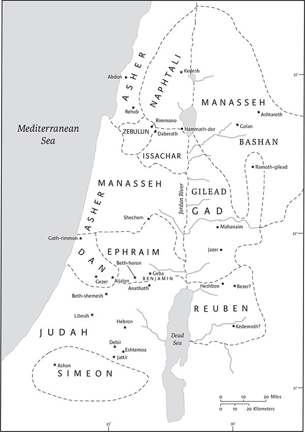
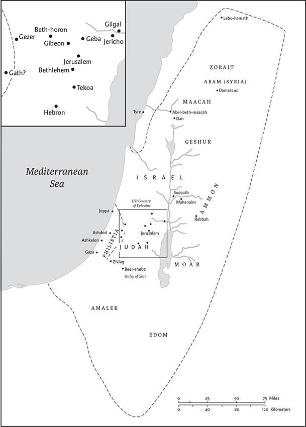

1 Chronicles
1 Paralipomenon in Greek
Name and Location in Canon
Like the books of Samuel and Kings, Chronicles was originally one book. It was probably first divided by the Greek translators, perhaps because of its length. The break between the two books, however, comes at a natural point, with the notice of the death of King David at the end of 1 Chronicles, and the account of the reign of his successor Solomon at the beginning of 2 Chronicles.
The title given to the book by the early rabbis, “the book of the events of the days” (Heb seper dibre hayyamim), suggests that the book is a historical writing, addressing past events in chronological order; the same phrase is used often in Kings (e.g., 1 Kings 14.19) for a different work, one of the sources of the books of Kings. The name of Chronicles in the ancient Greek translation of the Jewish scriptures, the Septuagint, is “Paraleipomena,” meaning “the things left out”; this name suggests that Chronicles records the events left out of earlier biblical history. These understandings of Chronicles are contested by modern scholars. It was the church father Jerome’s description of the book as a “chronicle,” a summary of (divine) history, that has left the book with its current title.
In printed Jewish Bibles, Chronicles is the last book in the third and final division of the canon, the Writings (“Ketubim”), although in some manuscripts it occurs earlier, either as the first of the Writings, or before Ezra‐Nehemiah, that is, in chronological order. In Christian Bibles, Chronicles is one of the Historical Books and follows the books of Kings, which it largely parallels.
Authorship and Date of Composition
Most likely the book’s anonymous author lived in Jerusalem and had great familiarity with the Temple and its assorted traditions. Since the book of Ezra begins where Chronicles ends, with the decree of the Persian king Cyrus the Great that allowed the exiled Jews to return home from wherever they had been dispersed throughout Cyrus’s kingdom and to rebuild the Temple (538 bce), some scholars have suggested that Chronicles, and Ezra‐Nehemiah, had a single author or editor. Most other scholars think that the linguistic, thematic, and historiographic differences between Chronicles and Ezra‐Nehemiah are too great to posit a common author. In this view, which is followed here, the Chronicler’s work, which begins with the first person (Adam) and ends with Cyrus’s summons to the exiled Jews to return home (2 Chr 36.21–23), should be separated from the Ezra‐Nehemiah. Hence, in the following pages, “the Chronicler” designates the author of Chronicles.
The Chronicler wrote after much of the Hebrew Bible had already been written, and he draws extensively upon this rich literary tradition. The dependence of Chronicles upon Genesis is evident in the genealogies (1 Chr 1–9); the dependence upon Samuel is clear in the narration of Saul’s demise and David’s reign (1 Chr 10–29); and the dependence upon Kings is unmistakable in the narration of Solomon and the Judahite kingdom (2 Chr 1–36). Although a few scholars think that the authors of Samuel‐Kings and Chronicles drew from a common source, it makes more sense to hold that the Chronicler selectively drew from an earlier and shorter version of Samuel‐Kings. The Chronicler’s work is also informed by a variety of other biblical texts. Citations from or allusions to the Torah/Pentateuch and the books of Joshua, Judges, Isaiah, Jeremiah, Ezekiel, Psalms, and Ruth all appear in Chronicles. Scholars generally agree that the Chronicler also had access to sources that did not become part of the Bible, but their nature and extent are disputed. Given that Chronicles borrows from earlier biblical writings, most prominently an older and shorter version of Samuel‐Kings (with many additions, deletions, and changes), readers may find it helpful to read Chronicles on its own terms as a distinctive literary work, but also to compare its presentation with that of the biblical texts from which it draws.
It is difficult to date Chronicles precisely, beyond noting that it must be postexilic, since it ends with Cyrus’s decree. A range of over three hundred and fifty years, from the late sixth to the mid‐second century bce, has been suggested for its initial composition. A date in the late fourth century seems most plausible, because that would account for the author’s references to other biblical writings, the mention of people who likely lived in the fourth century (1 Chr 3.22–24), and the literary features within the work that anticipate similar features in Jewish Hellenistic writings. Yet, there are no specific references, no absolute synchronisms, and no nonbiblical citations that definitively date the book to a given decade or quarter‐century.
Structure, Contents, and Interpretation
Chronicles has three major sections: the genealogies (1 Chr 1–9), the history of the United Monarchy (1 Chr 10– 2 Chr 9), and the history of the Judahite monarchy (2 Chr 10–36). The first section, which forms the introduction to the work, begins with Adam (1 Chr 1), but focuses upon the identity, interrelationships, and location of Israel’s many tribes (1 Chr 2–9). In traditional societies such genealogies explain and justify the place and function of various individuals, groups, and institutions. In the case of 1 Chr 1–8, the Chronicler stresses the ties between Israel and the land. The very scope and structure of the Chronicler’s genealogical system underscore the indivisibility of Israel. Within this larger structure, Judah, Levi, and Benjamin receive by far the most extensive genealogies, reflecting the Chronicler’s view that these three tribes are critical to preserving Israel’s distinctive legacy. The list of those Jews who returned from exile (1 Chr 9) concludes these chapters by highlighting the continuity between earlier Israel and postexilic Judah (the Persian province of Yehud). In the second section, after briefly addressing and condemning the reign of Saul, focusing only on his demise (1 Chr 10), the Chronicler devotes most of his attention to the highly successful reigns of David (1 Chr 11–29) and Solomon (2 Chr 1–9), which clearly represent a high point of the history. The rest of the book relates the emergence, continuation, and fall of the kingdom of Judah (2 Chr 10–36). Because Chronicles begins with the first person (Adam) and ends with the aftermath of the Babylonian exile (2 Chr 36), it forms a parallel story of Israel’s past—albeit much shorter, more focused, and written later—to the story of Israel’s past found in Genesis through Kings.
It is no accident that the Chronicler places David and Solomon’s achievements at the center of the history of his people. The author thereby underscores the prominence of those Israelite institutions he believed developed, were consolidated, or were transformed during this period—the priesthood, descended from Aaron; the Levites in all their responsibilities as singers, teachers, administrators, and ancillaries to the priests; the Davidic dynasty; and, last but not least, the Temple itself. These institutions remained fundamentally central to his audience. Compared with the golden age of the United Monarchy, the age of the much smaller Judahite kingdom marks a significant contrast.
Following the death of Solomon and the ascension of his son Rehoboam, the ten northern tribes seceded from southern rule (2 Chr 11.1–17). Whereas the author of Kings follows the course of both the Northern and the Southern Kingdoms, the Chronicler concentrates on the tribes of Judah, Benjamin, and Levi, who make up the Southern Kingdom of Judah (2 Chr 11.5–6,12,13–17,23). In Chronicles the course of the Judahite monarchy is characterized by both defeats and successes. The Chronicler consistently documents the achievements of Judah’s best kings—Abijah (2 Chr 13.2–21), Asa (2 Chr 14.1–6; 15.8–15), Jehoshaphat (2 Chr 17.1–9; 19.4–11), Hezekiah (2 Chr 29–31), and Josiah (2 Chr 34.1–7)—to institute reforms, reunite the people, and recover lost territories. Major regressions occur in the reigns of Ahaz (2 Chr 28), Manasseh (2 Chr 33.1–11), and the final kings of Judah (2 Chr 36.1–13). In depicting their history, the Chronicler is largely dependent on Kings, but as the episode concerning Manasseh’s repentance and restoration (2 Chr 33.12–19; cf. 2 Kings 21.1–16) demonstrates, he may revise these sources to fit his theology, making both major and minor changes, as well as many corrections, additions, and deletions.
Throughout the work, God sends prophets to warn monarchs, leaders, and people alike about the consequences of their actions, imploring them to repent. Whereas in Kings, prophets are often a fixture of life in the Northern Kingdom (e.g., Elijah and Elisha) and are rarer in the life of the Southern Kingdom (Isaiah being a notable exception), in Chronicles prophets and prophetic figures, such as Shemaiah (2 Chr 12.5–6), Azariah (2 Chr 15.1–7), Hanani (2 Chr 16.7–9), Jehu (2 Chr 19.2–3) and Zechariah (2 Chr 24.20), appear in the reign of virtually every significant southern king. That the Chronicler drew from nonbiblical sources when depicting some of these otherwise unattested prophetic figures is possible, but it seems likely that he freely created others to fit his theological conception of the past. In this way, the Chronicler stresses that Moses’s promise that the Lord would create a prophetic succession, patterned after the prophetic ministry of Moses himself (Deut 18.15–22), was fulfilled in the history of Judah. In his commentary on the defeat and exile of the Southern Kingdom, the Chronicler adds that Judah was exiled only after the Lord sent a steady supply of prophets to stir the people and priestly leaders to reform, but their warnings went unheeded (2 Chr 36.14–16).
Both Kings and Chronicles end by describing the Babylonian invasion and exile in the sixth century bce, but Chronicles also includes Cyrus’s decree allowing the exiles to return to Judah (2 Chr 36.22–23), offering a clearer hope for the future than the conclusion of Kings. In this way Chronicles contains and relativizes the tremendous tragedy of the Babylonian deportations soberly depicted in 2 Kings 24–25. Thus Chronicles, with its positive ending and emphasis on the power of repentance and rebuilding, is more optimistic than the history of Samuel‐Kings, which it has rewritten, supplemented, and corrected. As the beginning of Chronicles introduces the people of Israel and charts their emergence in the land, the ending of the book anticipates their return.
Gary N. Knoppers
1 Adam, Seth, Enosh; 2Kenan, Mahalalel, Jared; 3Enoch, Methuselah, Lamech; 4Noah, Shem, Ham, and Japheth.
5The descendants of Japheth: Gomer, Magog, Madai, Javan, Tubal, Meshech, and Tiras. 6The descendants of Gomer: Ashkenaz, Diphath,a and Togarmah. 7The descendants of Javan: Elishah, Tarshish, Kittim, and Rodanim.b
8The descendants of Ham: Cush, Egypt, Put, and Canaan. 9The descendants of Cush: Seba, Havilah, Sabta, Raama, and Sabteca. The descendants of Raamah: Sheba and Dedan. 10Cush became the father of Nimrod; he was the first to be a mighty one on the earth.
11Egypt became the father of Ludim, Anamim, Lehabim, Naphtuhim, 12Pathrusim, Casluhim, and Caphtorim, from whom the Philistines come.c
13Canaan became the father of Sidon his firstborn, and Heth, 14and the Jebusites, the Amorites, the Girgashites, 15the Hivites, the Arkites, the Sinites, 16the Arvadites, the Zemarites, and the Hamathites.
17The descendants of Shem: Elam, Asshur, Arpachshad, Lud, Aram, Uz, Hul, Gether, and Meshech.d 18Arpachshad became the father of Shelah; and Shelah became the father of Eber. 19To Eber were born two sons: the name of the one was Peleg (for in his days the earth was divided), and the name of his brother Joktan. 20Joktan became the father of Almodad, Sheleph, Hazarmaveth, Jerah, 21Hadoram, Uzal, Diklah, 22Ebal, Abimael, Sheba, 23Ophir, Havilah, and Jobab; all these were the descendants of Joktan.
24Shem, Arpachshad, Shelah; 25Eber, Peleg, Reu; 26Serug, Nahor, Terah; 27Abram, that is, Abraham.
28The sons of Abraham: Isaac and Ishmael. 29These are their genealogies: the firstborn of Ishmael, Nebaioth; and Kedar, Adbeel, Mibsam, 30Mishma, Dumah, Massa, Hadad, Tema, 31Jetur, Naphish, and Kedemah. These are the sons of Ishmael. 32The sons of Keturah, Abraham’s concubine: she bore Zimran, Jokshan, Medan, Midian, Ishbak, and Shuah. The sons of Jokshan: Sheba and Dedan. 33The sons of Midian: Ephah, Epher, Hanoch, Abida, and Eldaah. All these were the descendants of Keturah.
34Abraham became the father of Isaac. The sons of Isaac: Esau and Israel. 35The sons of Esau: Eliphaz, Reuel, Jeush, Jalam, and Korah. 36The sons of Eliphaz: Teman, Omar, Zephi, Gatam, Kenaz, Timna, and Amalek. 37The sons of Reuel: Nahath, Zerah, Shammah, and Mizzah.
38The sons of Seir: Lotan, Shobal, Zibeon, Anah, Dishon, Ezer, and Dishan. 39The sons of Lotan: Hori and Homam; and Lotan’s sister was Timna. 40The sons of Shobal: Alian, Manahath, Ebal, Shephi, and Onam. The sons of Zibeon: Aiah and Anah. 41The sons of Anah: Dishon. The sons of Dishon: Hamran, Eshban, Ithran, and Cheran. 42The sons of Ezer: Bilhan, Zaavan, and Jaakan.a The sons of Dishan:b Uz and Aran.
43These are the kings who reigned in the land of Edom before any king reigned over the Israelites: Bela son of Beor, whose city was called Dinhabah. 44When Bela died, Jobab son of Zerah of Bozrah succeeded him. 45When Jobab died, Husham of the land of the Temanites succeeded him. 46When Husham died, Hadad son of Bedad, who defeated Midian in the country of Moab, succeeded him; and the name of his city was Avith. 47When Hadad died, Samlah of Masrekah succeeded him. 48When Samlah died, Shaulc of Rehoboth on the Euphrates succeeded him. 49When Shaulc died, Baal‐hanan son of Achbor succeeded him. 50When Baal‐hanan died, Hadad succeeded him; the name of his city was Pai, and his wife’s name Mehetabel daughter of Matred, daughter of Me‐zahab. 51And Hadad died.
The clansd of Edom were: clansd Timna, Aliah,e Jetheth, 52Oholibamah, Elah, Pinon, 53Kenaz, Teman, Mibzar, 54Magdiel, and Iram; these are the clansd of Edom.
2 These are the sons of Israel: Reuben, Simeon, Levi, Judah, Issachar, Zebulun, 2Dan, Joseph, Benjamin, Naphtali, Gad, and Asher. 3The sons of Judah: Er, Onan, and Shelah; these three the Canaanite woman Bath‐shua bore to him. Now Er, Judah’s firstborn, was wicked in the sight of the Lord, and he put him to death. 4His daughter‐inlaw Tamar also bore him Perez and Zerah. Judah had five sons in all.
5The sons of Perez: Hezron and Hamul. 6The sons of Zerah: Zimri, Ethan, Heman, Calcol, and Dara,a five in all. 7The sons of Carmi: Achar, the troubler of Israel, who transgressed in the matter of the devoted thing; 8and Ethan’s son was Azariah.
9The sons of Hezron, who were born to him: Jerahmeel, Ram, and Chelubai. 10Ram became the father of Amminadab, and Amminadab became the father of Nahshon, prince of the sons of Judah. 11Nahshon became the father of Salma, Salma of Boaz, 12Boaz of Obed, Obed of Jesse. 13Jesse became the father of Eliab his firstborn, Abinadab the second, Shimea the third, 14Nethanel the fourth, Raddai the fifth, 15Ozem the sixth, David the seventh; 16and their sisters were Zeruiah and Abigail. The sons of Zeruiah: Abishai, Joab, and Asahel, three. 17Abigail bore Amasa, and the father of Amasa was Jether the Ishmaelite.
18Caleb son of Hezron had children by his wife Azubah, and by Jerioth; these were her sons: Jesher, Shobab, and Ardon. 19When Azubah died, Caleb married Ephrath, who bore him Hur. 20Hur became the father of Uri, and Uri became the father of Bezalel.
21Afterward Hezron went in to the daughter of Machir father of Gilead, whom he married when he was sixty years old; and she bore him Segub; 22and Segub became the father of Jair, who had twenty‐three towns in the land of Gilead. 23But Geshur and Aram took from them Havvoth‐jair, Kenath and its villages, sixty towns. All these were descendants of Machir, father of Gilead. 24After the death of Hezron, in Caleb‐ephrathah, Abijah wife of Hezron bore him Ashhur, father of Tekoa.
25The sons of Jerahmeel, the firstborn of Hezron: Ram his firstborn, Bunah, Oren, Ozem, and Ahijah. 26Jerahmeel also had another wife, whose name was Atarah; she was the mother of Onam. 27The sons of Ram, the firstborn of Jerahmeel: Maaz, Jamin, and Eker. 28The sons of Onam: Shammai and Jada. The sons of Shammai: Nadab and Abishur. 29The name of Abishur’s wife was Abihail, and she bore him Ahban and Molid. 30The sons of Nadab: Seled and Appaim; and Seled died childless. 31The sona of Appaim: Ishi. The sona of Ishi: Sheshan. The sona of Sheshan: Ahlai. 32The sons of Jada, Shammai’s brother: Jether and Jonathan; and Jether died childless. 33The sons of Jonathan: Peleth and Zaza. These were the descendants of Jerahmeel. 34Now Sheshan had no sons, only daughters; but Sheshan had an Egyptian slave, whose name was Jarha. 35So Sheshan gave his daughter in marriage to his slave Jarha; and she bore him Attai. 36Attai became the father of Nathan, and Nathan of Zabad. 37Zabad became the father of Ephlal, and Ephlal of Obed. 38Obed became the father of Jehu, and Jehu of Azariah. 39Azariah became the father of Helez, and Helez of Eleasah. 40Eleasah became the father of Sismai, and Sismai of Shallum. 41Shallum became the father of Jekamiah, and Jekamiah of Elishama.
42The sons of Caleb brother of Jerahmeel: Meshab his firstborn, who was father of Ziph. The sons of Mareshah father of Hebron. 43The sons of Hebron: Korah, Tappuah, Rekem, and Shema. 44Shema became father of Raham, father of Jorkeam; and Rekem became the father of Shammai. 45The son of Shammai: Maon; and Maon was the father of Beth‐zur. 46Ephah also, Caleb’s concubine, bore Haran, Moza, and Gazez; and Haran became the father of Gazez. 47The sons of Jahdai: Regem, Jotham, Geshan, Pelet, Ephah, and Shaaph. 48Maacah, Caleb’s concubine, bore Sheber and Tirhanah. 49She also bore Shaaph father of Madmannah, Sheva father of Machbenah and father of Gibea; and the daughter of Caleb was Achsah. 50These were the descendants of Caleb.
The sonsc of Hur the firstborn of Ephrathah: Shobal father of Kiriath‐jearim, 51Salma father of Bethlehem, and Hareph father of Beth‐gader. 52Shobal father of Kiriath‐jearim had other sons: Haroeh, half of the Menuhoth. 53And the families of Kiriath‐jearim: the Ithrites, the Puthites, the Shumathites, and the Mishraites; from these came the Zorathites and the Eshtaolites. 54The sons of Salma: Bethlehem, the Netophathites, Atroth‐bethjoab, and half of the Manahathites, the Zorites. 55The families also of the scribes that lived at Jabez: the Tirathites, the Shimeathites, and the Sucathites. These are the Kenites who came from Hammath, father of the house of Rechab.
3 These are the sons of David who were born to him in Hebron: the firstborn Amnon, by Ahinoam the Jezreelite; the second Daniel, by Abigail the Carmelite; 2the third Absalom, son of Maacah, daughter of King Talmai of Geshur; the fourth Adonijah, son of Haggith; 3the fifth Shephatiah, by Abital; the sixth Ithream, by his wife Eglah; 4six were born to him in Hebron, where he reigned for seven years and six months. And he reigned thirty‐three years in Jerusalem. 5These were born to him in Jerusalem: Shimea, Shobab, Nathan, and Solomon, four by Bath‐shua, daughter of Ammiel; 6then Ibhar, Elishama, Eliphelet, 7Nogah, Nepheg, Japhia, 8Elishama, Eliada, and Eliphelet, nine. 9All these were David’s sons, besides the sons of the concubines; and Tamar was their sister.
10The descendants of Solomon: Rehoboam, Abijah his son, Asa his son, Jehoshaphat his son, 11Joram his son, Ahaziah his son, Joash his son, 12Amaziah his son, Azariah his son, Jotham his son, 13Ahaz his son, Hezekiah his son, Manasseh his son, 14Amon his son, Josiah his son. 15The sons of Josiah: Johanan the firstborn, the second Jehoiakim, the third Zedekiah, the fourth Shallum. 16The descendants of Jehoiakim: Jeconiah his son, Zedekiah his son; 17and the sons of Jeconiah, the captive: Shealtiel his son, 18Malchiram, Pedaiah, Shenazzar, Jekamiah, Hoshama, and Nedabiah; 19The sons of Pedaiah: Zerubbabel and Shimei; and the sons of Zerubbabel: Meshullam and Hananiah, and Shelomith was their sister; 20and Hashubah, Ohel, Berechiah, Hasadiah, and Jushab‐hesed, five. 21The sons of Hananiah: Pelatiah and Jeshaiah, his sona Rephaiah, his sona Arnan, his sona Obadiah, his sona Shecaniah. 22The sonb of Shecaniah: Shemaiah. And the sons of Shemaiah: Hattush, Igal, Bariah, Neariah, and Shaphat, six. 23The sons of Neariah: Elioenai, Hizkiah, and Azrikam, three. 24The sons of Elioenai: Hodaviah, Eliashib, Pelaiah, Akkub, Johanan, Delaiah, and Anani, seven.
4 The sons of Judah: Perez, Hezron, Carmi, Hur, and Shobal. 2Reaiah son of Shobal became the father of Jahath, and Jahath became the father of Ahumai and Lahad. These were the families of the Zorathites. 3These were the sonsc of Etam: Jezreel, Ishma, and Idbash; and the name of their sister was Hazzelelponi, 4and Penuel was the father of Gedor, and Ezer the father of Hushah. These were the sons of Hur, the firstborn of Ephrathah, the father of Bethlehem. 5Ashhur father of Tekoa had two wives, Helah and Naarah; 6Naarah bore him Ahuzzam, Hepher, Temeni, and Haahashtari.d These were the sons of Naarah. 7The sons of Helah: Zereth, Izhar,e and Ethnan. 8Koz became the father of Anub, Zobebah, and the families of Aharhel son of Harum. 9Jabez was honored more than his brothers; and his mother named him Jabez, saying, “Because I bore him in pain.” 10Jabez called on the God of Israel, saying, “Oh that you would bless me and enlarge my border, and that your hand might be with me, and that you would keep me from hurt and harm!” And God granted what he asked. 11Chelub the brother of Shuhah became the father of Mehir, who was the father of Eshton. 12Eshton became the father of Beth‐rapha, Paseah, and Tehinnah the father of Ir‐nahash. These are the men of Recah. 13The sons of Kenaz: Othniel and Seraiah; and the sons of Othniel: Hathath and Meonothai.f 14Meonothai became the father of Ophrah; and Seraiah became the father of Joab father of Ge‐harashim,g so‐called because they were artisans. 15The sons of Caleb son of Jephunneh: Iru, Elah, and Naam; and the sonb of Elah: Kenaz. 16The sons of Jehallelel: Ziph, Ziphah, Tiria, and Asarel. 17The sons of Ezrah: Jether, Mered, Epher, and Jalon. These are the sons of Bithiah, daughter of Pharaoh, whom Mered married;h and she conceived and borei Miriam, Shammai, and Ishbah father of Eshtemoa. 18And his Judean wife bore Jered father of Gedor, Heber father of Soco, and Jekuthiel father of Zanoah. 19The sons of the wife of Hodiah, the sister of Naham, were the fathers of Keilah the Garmite and Eshtemoa the Maacathite. 20The sons of Shimon: Amnon, Rinnah, Benhanan, and Tilon. The sons of Ishi: Zoheth and Ben‐zoheth. 21The sons of Shelah son of Judah: Er father of Lecah, Laadah father of Mareshah, and the families of the guild of linen workers at Beth‐ashbea; 22and Jokim, and the men of Cozeba, and Joash, and Saraph, who married into Moab but returned to Lehema (now the recordsb are ancient). 23These were the potters and inhabitants of Netaim and Gederah; they lived there with the king in his service.
24The sons of Simeon: Nemuel, Jamin, Jarib, Zerah, Shaul;c 25Shallum was his son, Mibsam his son, Mishma his son. 26The sons of Mishma: Hammuel his son, Zaccur his son, Shimei his son. 27Shimei had sixteen sons and six daughters; but his brothers did not have many children, nor did all their family multiply like the Judeans. 28They lived in Beer‐sheba, Moladah, Hazar‐shual, 29Bilhah, Ezem, Tolad, 30Bethuel, Hormah, Ziklag, 31Beth‐marcaboth, Hazar‐susim, Beth‐biri, and Shaaraim. These were their towns until David became king. 32And their villages were Etam, Ain, Rimmon, Tochen, and Ashan, five towns, 33along with all their villages that were around these towns as far as Baal. These were their settlements. And they kept a genealogical record.
34Meshobab, Jamlech, Joshah son of Amaziah, 35Joel, Jehu son of Joshibiah son of Seraiah son of Asiel, 36Elioenai, Jaakobah, Jeshohaiah, Asaiah, Adiel, Jesimiel, Benaiah, 37Ziza son of Shiphi son of Allon son of Jedaiah son of Shimri son of Shemaiah—38these mentioned by name were leaders in their families, and their clans increased greatly. 39They journeyed to the entrance of Gedor, to the east side of the valley, to seek pasture for their flocks, 40where they found rich, good pasture, and the land was very broad, quiet, and peaceful; for the former inhabitants there belonged to Ham. 41These, registered by name, came in the days of King Hezekiah of Judah, and attacked their tents and the Meunim who were found there, and exterminated them to this day, and settled in their place, because there was pasture there for their flocks. 42And some of them, five hundred men of the Simeonites, went to Mount Seir, having as their leaders Pelatiah, Neariah, Rephaiah, and Uzziel, sons of Ishi; 43they destroyed the remnant of the Amalekites that had escaped, and they have lived there to this day.
5 The sons of Reuben the firstborn of Israel. (He was the firstborn, but because he defiled his father’s bed his birthright was given to the sons of Joseph son of Israel, so that he is not enrolled in the genealogy according to the birthright; 2though Judah became prominent among his brothers and a ruler came from him, yet the birthright belonged to Joseph.) 3The sons of Reuben, the firstborn of Israel: Hanoch, Pallu, Hezron, and Carmi. 4The sons of Joel: Shemaiah his son, Gog his son, Shimei his son, 5Micah his son, Reaiah his son, Baal his son, 6Beerah his son, whom King Tilgathpilneser of Assyria carried away into exile; he was a chieftain of the Reubenites. 7And his kindred by their families, when the genealogy of their generations was reckoned: the chief, Jeiel, and Zechariah, 8and Bela son of Azaz, son of Shema, son of Joel, who lived in Aroer, as far as Nebo and Baal‐meon. 9He also lived to the east as far as the beginning of the desert this side of the Euphrates, because their cattle had multiplied in the land of Gilead. 10And in the days of Saul they made war on the Hagrites, who fell by their hand; and they lived in their tents throughout all the region east of Gilead.
11The sons of Gad lived beside them in the land of Bashan as far as Salecah: 12Joel the chief, Shapham the second, Janai, and Shaphat in Bashan. 13And their kindred according to their clans: Michael, Meshullam, Sheba, Jorai, Jacan, Zia, and Eber, seven. 14These were the sons of Abihail son of Huri, son of Jaroah, son of Gilead, son of Michael, son of Jeshishai, son of Jahdo, son of Buz; 15Ahi son of Abdiel, son of Guni, was chief in their clan; 16and they lived in Gilead, in Bashan and in its towns, and in all the pasture lands of Sharon to their limits. 17All of these were enrolled by genealogies in the days of King Jotham of Judah, and in the days of King Jeroboam of Israel.
18The Reubenites, the Gadites, and the half‐tribe of Manasseh had valiant warriors, who carried shield and sword, and drew the bow, expert in war, forty‐four thousand seven hundred sixty, ready for service. 19They made war on the Hagrites, Jetur, Naphish, and Nodab; 20and when they received help against them, the Hagrites and all who were with them were given into their hands, for they cried to God in the battle, and he granted their entreaty because they trusted in him. 21They captured their livestock: fifty thousand of their camels, two hundred fifty thousand sheep, two thousand donkeys, and one hundred thousand captives. 22Many fell slain, because the war was of God. And they lived in their territory until the exile.
23The members of the half‐tribe of Manasseh lived in the land; they were very numerous from Bashan to Baal‐hermon, Senir, and Mount Hermon. 24These were the heads of their clans: Epher,a Ishi, Eliel, Azriel, Jeremiah, Hodaviah, and Jahdiel, mighty warriors, famous men, heads of their clans. 25But they transgressed against the God of their ancestors, and prostituted themselves to the gods of the peoples of the land, whom God had destroyed before them. 26So the God of Israel stirred up the spirit of King Pul of Assyria, the spirit of King Tilgath‐pilneser of Assyria, and he carried them away, namely, the Reubenites, the Gadites, and the half‐tribe of Manasseh, and brought them to Halah, Habor, Hara, and the river Gozan, to this day.
6b The sons of Levi: Gershom,c Kohath, and Merari. 2The sons of Kohath: Amram, Izhar, Hebron, and Uzziel. 3The children of Amram: Aaron, Moses, and Miriam. The sons of Aaron: Nadab, Abihu, Eleazar, and Ithamar. 4Eleazar became the father of Phinehas, Phinehas of Abishua, 5Abishua of Bukki, Bukki of Uzzi, 6Uzzi of Zerahiah, Zerahiah of Meraioth, 7Meraioth of Amariah, Amariah of Ahitub, 8Ahitub of Zadok, Zadok of Ahimaaz, 9Ahimaaz of Azariah, Azariah of Johanan, 10and Johanan of Azariah (it was he who served as priest in the house that Solomon built in Jerusalem). 11Azariah became the father of Amariah, Amariah of Ahitub, 12Ahitub of Zadok, Zadok of Shallum, 13Shallum of Hilkiah, Hilkiah of Azariah, 14Azariah of Seraiah, Seraiah of Jehozadak; 15and Jehozadak went into exile when the Lord sent Judah and Jerusalem into exile by the hand of Nebuchadnezzar.
16dThe sons of Levi: Gershom, Kohath, and Merari. 17These are the names of the sons of Gershom: Libni and Shimei. 18The sons of Kohath: Amram, Izhar, Hebron, and Uzziel. 19The sons of Merari: Mahli and Mushi. These are the clans of the Levites according to their ancestry. 20Of Gershom: Libni his son, Jahath his son, Zimmah his son, 21Joah his son, Iddo his son, Zerah his son, Jeatherai his son. 22The sons of Kohath: Amminadab his son, Korah his son, Assir his son, 23Elkanah his son, Ebiasaph his son, Assir his son, 24Tahath his son, Uriel his son, Uzziah his son, and Shaul his son. 25The sons of Elkanah: Amasai and Ahimoth, 26Elkanah his son, Zophai his son, Nahath his son, 27Eliab his son, Jeroham his son, Elkanah his son. 28The sons of Samuel:

The Levitical towns according to 1 Chr 6:54–80. Cities of refuge are highlighted with a star. The tribal boundaries are shown by a dashed line.
Joela his firstborn, the second Abijah.b 29The sons of Merari: Mahli, Libni his son, Shimei his son, Uzzah his son, 30Shimea his son, Haggiah his son, and Asaiah his son.
31These are the men whom David put in charge of the service of song in the house of the Lord, after the ark came to rest there. 32They ministered with song before the tabernacle of the tent of meeting, until Solomon had built the house of the Lord in Jerusalem; and they performed their service in due order. 33These are the men who served; and their sons were: Of the Kohathites: Heman, the singer, son of Joel, son of Samuel, 34son of Elkanah, son of Jeroham, son of Eliel, son of Toah, 35son of Zuph, son of Elkanah, son of Mahath, son of Amasai, 36son of Elkanah, son of Joel, son of Azariah, son of Zephaniah, 37son of Tahath, son of Assir, son of Ebiasaph, son of Korah, 38son of Izhar, son of Kohath, son of Levi, son of Israel; 39and his brother Asaph, who stood on his right, namely, Asaph son of Berechiah, son of Shimea, 40son of Michael, son of Baaseiah, son of Malchijah, 41son of Ethni, son of Zerah, son of Adaiah, 42son of Ethan, son of Zimmah, son of Shimei, 43son of Jahath, son of Gershom, son of Levi. 44On the left were their kindred the sons of Merari: Ethan son of Kishi, son of Abdi, son of Malluch, 45son of Hashabiah, son of Amaziah, son of Hilkiah, 46son of Amzi, son of Bani, son of Shemer, 47son of Mahli, son of Mushi, son of Merari, son of Levi; 48and their kindred the Levites were appointed for all the service of the tabernacle of the house of God.
49But Aaron and his sons made offerings on the altar of burnt offering and on the altar of incense, doing all the work of the most holy place, to make atonement for Israel, according to all that Moses the servant of God had commanded. 50These are the sons of Aaron: Eleazar his son, Phinehas his son, Abishua his son, 51Bukki his son, Uzzi his son, Zerahiah his son, 52Meraioth his son, Amariah his son, Ahitub his son, 53Zadok his son, Ahimaaz his son.
54These are their dwelling places according to their settlements within their borders: to the sons of Aaron of the families of Kohathites—for the lot fell to them first— 55to them they gave Hebron in the land of Judah and its surrounding pasture lands, 56but the fields of the city and its villages they gave to Caleb son of Jephunneh. 57To the sons of Aaron they gave the cities of refuge: Hebron, Libnah with its pasture lands, Jattir, Eshtemoa with its pasture lands, 58Hilena with its pasture lands, Debir with its pasture lands, 59Ashan with its pasture lands, and Beth‐shemesh with its pasture lands. 60From the tribe of Benjamin, Geba with its pasture lands, Alemeth with its pasture lands, and Anathoth with its pasture lands. All their towns throughout their families were thirteen.
61To the rest of the Kohathites were given by lot out of the family of the tribe, out of the half‐tribe, the half of Manasseh, ten towns. 62To the Gershomites according to their families were allotted thirteen towns out of the tribes of Issachar, Asher, Naphtali, and Manasseh in Bashan. 63To the Merarites according to their families were allotted twelve towns out of the tribes of Reuben, Gad, and Zebulun. 64So the people of Israel gave the Levites the towns with their pasture lands. 65They also gave them by lot out of the tribes of Judah, Simeon, and Benjamin these towns that are mentioned by name.
66And some of the families of the sons of Kohath had towns of their territory out of the tribe of Ephraim. 67They were given the cities of refuge: Shechem with its pasture lands in the hill country of Ephraim, Gezer with its pasture lands, 68Jokmeam with its pasture lands, Beth‐horon with its pasture lands, 69Aijalon with its pasture lands, Gathrimmon with its pasture lands; 70and out of the half‐tribe of Manasseh, Aner with its pasture lands, and Bileam with its pasture lands, for the rest of the families of the Kohathites.
71To the Gershomites: out of the halftribe of Manasseh: Golan in Bashan with its pasture lands and Ashtaroth with its pasture lands; 72and out of the tribe of Issachar: Kedesh with its pasture lands, Daberathb with its pasture lands, 73Ramoth with its pasture lands, and Anem with its pasture lands; 74out of the tribe of Asher: Mashal with its pasture lands, Abdon with its pasture lands, 75Hukok with its pasture lands, and Rehob with its pasture lands; 76and out of the tribe of Naphtali: Kedesh in Galilee with its pasture lands, Hammon with its pasture lands, and Kiriathaim with its pasture lands. 77To the rest of the Merarites out of the tribe of Zebulun: Rimmono with its pasture lands, Tabor with its pasture lands, 78and across the Jordan from Jericho, on the east side of the Jordan, out of the tribe of Reuben: Bezer in the steppe with its pasture lands, Jahzah with its pasture lands, 79Kedemoth with its pasture lands, and Mephaath with its pasture lands; 80and out of the tribe of Gad: Ramoth in Gilead with its pasture lands, Mahanaim with its pasture lands, 81Heshbon with its pasture lands, and Jazer with its pasture lands.
7 The sonsc of Issachar: Tola, Puah, Jashub, and Shimron, four. 2The sons of Tola: Uzzi, Rephaiah, Jeriel, Jahmai, Ibsam, and Shemuel, heads of their ancestral houses, namely of Tola, mighty warriors of their generations, their number in the days of David being twenty‐two thousand six hundred. 3The sond of Uzzi: Izrahiah. And the sons of Izrahiah: Michael, Obadiah, Joel, and Isshiah, five, all of them chiefs; 4and along with them, by their generations, according to their ancestral houses, were units of the fighting force, thirty‐six thousand, for they had many wives and sons. 5Their kindred belonging to all the families of Issachar were in all eightyseven thousand mighty warriors, enrolled by genealogy.
6The sons of Benjamin: Bela, Becher, and Jediael, three. 7The sons of Bela: Ezbon, Uzzi, Uzziel, Jerimoth, and Iri, five, heads of ancestral houses, mighty warriors; and their enrollment by genealogies was twenty‐two thousand thirty‐four. 8The sons of Becher: Zemirah, Joash, Eliezer, Elioenai, Omri, Jeremoth, Abijah, Anathoth, and Alemeth. All these were the sons of Becher; 9and their enrollment by genealogies, according to their generations, as heads of their ancestral houses, mighty warriors, was twenty thousand two hundred. 10The sons of Jediael: Bilhan. And the sons of Bilhan: Jeush, Benjamin, Ehud, Chenaanah, Zethan, Tarshish, and Ahishahar. 11All these were the sons of Jediael according to the heads of their ancestral houses, mighty warriors, seventeen thousand two hundred, ready for service in war. 12And Shuppim and Huppim were the sons of Ir, Hushim the sona of Aher.
13The descendants of Naphtali: Jahziel, Guni, Jezer, and Shallum, the descendants of Bilhah.
14The sons of Manasseh: Asriel, whom his Aramean concubine bore; she bore Machir the father of Gilead. 15And Machir took a wife for Huppim and for Shuppim. The name of his sister was Maacah. And the name of the second was Zelophehad; and Zelophehad had daughters. 16Maacah the wife of Machir bore a son, and she named him Peresh; the name of his brother was Sheresh; and his sons were Ulam and Rekem. 17The sona of Ulam: Bedan. These were the sons of Gilead son of Machir, son of Manasseh. 18And his sister Hammolecheth bore Ishhod, Abiezer, and Mahlah. 19The sons of Shemida were Ahian, Shechem, Likhi, and Aniam.
20The sons of Ephraim: Shuthelah, and Bered his son, Tahath his son, Eleadah his son, Tahath his son, 21Zabad his son, Shuthelah his son, and Ezer and Elead. Now the people of Gath, who were born in the land, killed them, because they came down to raid their cattle. 22And their father Ephraim mourned many days, and his brothers came to comfort him. 23Ephraimb went in to his wife, and she conceived and bore a son; and he named him Beriah, because disasterc had befallen his house. 24His daughter was Sheerah, who built both Lower and Upper Beth‐horon, and Uzzen‐sheerah. 25Rephah was his son, Resheph his son, Telah his son, Tahan his son, 26Ladan his son, Ammihud his son, Elishama his son, 27Nund his son, Joshua his son. 28Their possessions and settlements were Bethel and its towns, and eastward Naaran, and westward Gezer and its towns, Shechem and its towns, as far as Ayyah and its towns; 29also along the borders of the Manassites, Beth‐shean and its towns, Taanach and its towns, Megiddo and its towns, Dor and its towns. In these lived the sons of Joseph son of Israel.
30The sons of Asher: Imnah, Ishvah, Ishvi, Beriah, and their sister Serah. 31The sons of Beriah: Heber and Malchiel, who was the father of Birzaith. 32Heber became the father of Japhlet, Shomer, Hotham, and their sister Shua. 33The sons of Japhlet: Pasach, Bimhal, and Ashvath. These are the sons of Japhlet. 34The sons of Shemer: Ahi, Rohgah, Hubbah, and Aram. 35The sons of Heleme his brother: Zophah, Imna, Shelesh, and Amal. 36The sons of Zophah: Suah, Harnepher, Shual, Beri, Imrah, 37Bezer, Hod, Shamma, Shilshah, Ithran, and Beera. 38The sons of Jether: Jephunneh, Pispa, and Ara. 39The sons of Ulla: Arah, Hanniel, and Rizia. 40All of these were men of Asher, heads of ancestral houses, select mighty warriors, chief of the princes. Their number enrolled by genealogies, for service in war, was twenty‐six thousand men.
8 Benjamin became the father of Bela his firstborn, Ashbel the second, Aharah the third, 2Nohah the fourth, and Rapha the fifth. 3And Bela had sons: Addar, Gera, Abihud,a 4Abishua, Naaman, Ahoah, 5Gera, Shephuphan, and Huram. 6These are the sons of Ehud (they were heads of ancestral houses of the inhabitants of Geba, and they were carried into exile to Manahath): 7Naaman,b Ahijah, and Gera, that is, Heglam,c who became the father of Uzza and Ahihud. 8And Shaharaim had sons in the country of Moab after he had sent away his wives Hushim and Baara. 9He had sons by his wife Hodesh: Jobab, Zibia, Mesha, Malcam, 10Jeuz, Sachia, and Mirmah. These were his sons, heads of ancestral houses. 11He also had sons by Hushim: Abitub and Elpaal. 12The sons of Elpaal: Eber, Misham, and Shemed, who built Ono and Lod with its towns, 13and Beriah and Shema (they were heads of ancestral houses of the inhabitants of Aijalon, who put to flight the inhabitants of Gath); 14and Ahio, Shashak, and Jeremoth. 15Zebadiah, Arad, Eder, 16Michael, Ishpah, and Joha were sons of Beriah. 17Zebadiah, Meshullam, Hizki, Heber, 18Ishmerai, Izliah, and Jobab were the sons of Elpaal. 19Jakim, Zichri, Zabdi, 20Elienai, Zillethai, Eliel, 21Adaiah, Beraiah, and Shimrath were the sons of Shimei. 22Ishpan, Eber, Eliel, 23Abdon, Zichri, Hanan, 24Hananiah, Elam, Anthothijah, 25Iphdeiah, and Penuel were the sons of Shashak. 26Shamsherai, Shehariah, Athaliah, 27Jaareshiah, Elijah, and Zichri were the sons of Jeroham. 28These were the heads of ancestral houses, according to their generations, chiefs. These lived in Jerusalem.
29Jeield the father of Gibeon lived in Gibeon, and the name of his wife was Maacah. 30His firstborn son: Abdon, then Zur, Kish, Baal,e Nadab, 31Gedor, Ahio, Zecher, 32and Mikloth, who became the father of Shimeah. Now these also lived opposite their kindred in Jerusalem, with their kindred. 33Ner became the father of Kish, Kish of Saul,f Saulf of Jonathan, Malchishua, Abinadab, and Eshbaal; 34and the son of Jonathan was Meribbaal; and Merib‐baal became the father of Micah. 35The sons of Micah: Pithon, Melech, Tarea, and Ahaz. 36Ahaz became the father of Jehoaddah; and Jehoaddah became the father of Alemeth, Azmaveth, and Zimri; Zimri became the father of Moza. 37Moza became the father of Binea; Raphah was his son, Eleasah his son, Azel his son. 38Azel had six sons, and these are their names: Azrikam, Bocheru, Ishmael, Sheariah, Obadiah, and Hanan; all these were the sons of Azel. 39The sons of his brother Eshek: Ulam his firstborn, Jeush the second, and Eliphelet the third. 40The sons of Ulam were mighty warriors, archers, having many children and grandchildren, one hundred fifty. All these were Benjaminites.
9 So all Israel was enrolled by genealogies; and these are written in the Book of the Kings of Israel. And Judah was taken intoexile in Babylon because of their unfaithfulness. 2Now the first to live again in their possessions in their towns were Israelites, priests, Levites, and temple servants.
3And some of the people of Judah, Benjamin, Ephraim, and Manasseh lived in Jerusalem: 4Uthai son of Ammihud, son of Omri, son of Imri, son of Bani, from the sons of Perez son of Judah. 5And of the Shilonites: Asaiah the firstborn, and his sons. 6Of the sons of Zerah: Jeuel and their kin, six hundred ninety. 7Of the Benjaminites: Sallu son of Meshullam, son of Hodaviah, son of Hassenuah, 8Ibneiah son of Jeroham, Elah son of Uzzi, son of Michri, and Meshullam son of Shephatiah, son of Reuel, son of Ibnijah; 9and their kindred according to their generations, nine hundred fifty‐six. All these were heads of families according to their ancestral houses.
10Of the priests: Jedaiah, Jehoiarib, Jachin, 11and Azariah son of Hilkiah, son of Meshullam, son of Zadok, son of Meraioth, son of Ahitub, the chief officer of the house of God; 12and Adaiah son of Jeroham, son of Pashhur, son of Malchijah, and Maasai son of Adiel, son of Jahzerah, son of Meshullam, son of Meshillemith, son of Immer; 13besides their kindred, heads of their ancestral houses, one thousand seven hundred sixty, qualified for the work of the service of the house of God.
14Of the Levites: Shemaiah son of Hasshub, son of Azrikam, son of Hashabiah, of the sons of Merari; 15and Bakbakkar, Heresh, Galal, and Mattaniah son of Mica, son of Zichri, son of Asaph; 16and Obadiah son of Shemaiah, son of Galal, son of Jeduthun, and Berechiah son of Asa, son of Elkanah, who lived in the villages of the Netophathites.
17The gatekeepers were: Shallum, Akkub, Talmon, Ahiman; and their kindred Shallum was the chief, 18stationed previously in the king’s gate on the east side. These were the gatekeepers of the camp of the Levites. 19Shallum son of Kore, son of Ebiasaph, son of Korah, and his kindred of his ancestral house, the Korahites, were in charge of the work of the service, guardians of the thresholds of the tent, as their ancestors had been in charge of the camp of the Lord, guardians of the entrance. 20And Phinehas son of Eleazar was chief over them in former times; the Lord was with him. 21Zechariah son of Meshelemiah was gatekeeper at the entrance of the tent of meeting. 22All these, who were chosen as gatekeepers at the thresholds, were two hundred twelve. They were enrolled by genealogies in their villages. David and the seer Samuel established them in their office of trust. 23So they and their descendants were in charge of the gates of the house of the Lord, that is, the house of the tent, as guards. 24The gatekeepers were on the four sides, east, west, north, and south; 25and their kindred who were in their villages were obliged to come in every seven days, in turn, to be with them; 26for the four chief gatekeepers, who were Levites, were in charge of the chambers and the treasures of the house of God. 27And they would spend the night near the house of God; for on them lay the duty of watching, and they had charge of opening it every morning.
28Some of them had charge of the utensils of service, for they were required to count them when they were brought in and taken out. 29Others of them were appointed over the furniture, and over all the holy utensils, also over the choice flour, the wine, the oil, the incense, and the spices. 30Others, of the sons of the priests, prepared the mixing of the spices, 31and Mattithiah, one of the Levites, the firstborn of Shallum the Korahite, was in charge of making the flat cakes. 32Also some of their kindred of the Kohathites had charge of the rows of bread, to prepare them for each sabbath.
33Now these are the singers, the heads of ancestral houses of the Levites, living in the chambers of the temple free from other service, for they were on duty day and night. 34These were heads of ancestral houses of the Levites, according to their generations; these leaders lived in Jerusalem.
35In Gibeon lived the father of Gibeon, Jeiel, and the name of his wife was Maacah. 36His firstborn son was Abdon, then Zur, Kish, Baal, Ner, Nadab, 37Gedor, Ahio, Zechariah, and Mikloth; 38and Mikloth became the father of Shimeam; and these also lived opposite their kindred in Jerusalem, with their kindred. 39Ner became the father of Kish, Kish of Saul, Saul of Jonathan, Malchishua, Abinadab, and Esh‐baal; 40and the son of Jonathan was Merib‐baal; and Merib‐baal became the father of Micah. 41The sons of Micah: Pithon, Melech, Tahrea, and Ahaz;a 42and Ahaz became the father of Jarah, and Jarah of Alemeth, Azmaveth, and Zimri; and Zimri became the father of Moza. 43Moza became the father of Binea; and Rephaiah was his son, Eleasah his son, Azel his son. 44Azel had six sons, and these are their names: Azrikam, Bocheru, Ishmael, Sheariah, Obadiah, and Hanan; these were the sons of Azel.
10 Now the Philistines fought against Israel; and the men of Israel fled before the Philistines, and fell slain on Mount Gilboa. 2The Philistines overtook Saul and his sons; and the Philistines killed Jonathan and Abinadab and Malchishua, sons of Saul. 3The battle pressed hard on Saul; and the archers found him, and he was wounded by the archers. 4Then Saul said to his armorbearer, “Draw your sword, and thrust me through with it, so that these uncircumcised may not come and make sport of me.” But his armor‐bearer was unwilling, for he was terrified. So Saul took his own sword and fell on it. 5When his armor‐bearer saw that Saul was dead, he also fell on his sword and died. 6Thus Saul died; he and his three sons and all his house died together. 7When all the men of Israel who were in the valley saw that the armyb had fled and that Saul and his sons were dead, they abandoned their towns and fled; and the Philistines came and occupied them.
8The next day when the Philistines came to strip the dead, they found Saul and his sons fallen on Mount Gilboa. 9They stripped him and took his head and his armor, and sent messengers throughout the land of the Philistines to carry the good news to their idols and to the people. 10They put his armor in the temple of their gods, and fastened his head in the temple of Dagon. 11But when all Jabesh‐gilead heard everything that the Philistines had done to Saul, 12all the valiant warriors got up and took away the body of Saul and the bodies of his sons, and brought them to Jabesh. Then they buried their bones under the oak in Jabesh, and fasted seven days.
13So Saul died for his unfaithfulness; he was unfaithful to the Lord in that he did not keep the command of the Lord; moreover, he had consulted a medium, seeking guidance, 14and did not seek guidance from the Lord. Therefore the Lorda put him to death and turned the kingdom over to David son of Jesse.
11 Then all Israel gathered together to David at Hebron and said, “See, we are your bone and flesh. 2For some time now, even while Saul was king, it was you who commanded the army of Israel. The Lord your God said to you: It is you who shall be shepherd of my people Israel, you who shall be ruler over my people Israel.” 3So all the elders of Israel came to the king at Hebron, and David made a covenant with them at Hebron before the Lord. And they anointed David king over Israel, according to the word of the Lord by Samuel.
4David and all Israel marched to Jerusalem, that is Jebus, where the Jebusites were, the inhabitants of the land. 5The inhabitants of Jebus said to David, “You will not come in here.” Nevertheless David took the stronghold of Zion, now the city of David. 6David had said, “Whoever attacks the Jebusites first shall be chief and commander.” And Joab son of Zeruiah went up first, so he became chief. 7David resided in the stronghold; therefore it was called the city of David. 8He built the city all around, from the Millo in complete circuit; and Joab repaired the rest of the city. 9And David became greater and greater, for the Lord of hosts was with him.
10Now these are the chiefs of David’s warriors, who gave him strong support in his kingdom, together with all Israel, to make him king, according to the word of the Lord concerning Israel. 11This is an account of David’s mighty warriors: Jashobeam, son of Hachmoni,b was chief of the Three;c he wielded his spear against three hundred whom he killed at one time.
12And next to him among the three warriors was Eleazar son of Dodo, the Ahohite. 13He was with David at Pas‐dammim when the Philistines were gathered there for battle. There was a plot of ground full of barley. Now the people had fled from the Philistines, 14but he and David took their stand in the middle of the plot, defended it, and killed the Philistines; and the Lord saved them by a great victory.
15Three of the thirty chiefs went down to the rock to David at the cave of Adullam, while the army of Philistines was encamped in the valley of Rephaim. 16David was then in the stronghold; and the garrison of the Philistines was then at Bethlehem. 17David said longingly, “O that someone would give me water to drink from the well of Bethlehem that is by the gate!” 18Then the Three broke through the camp of the Philistines, and drew water from the well of Bethlehem that was by the gate, and they brought it to David. But David would not drink of it; he poured it out to the Lord, 19and said, “My God forbid that I should do this. Can I drink the blood of these men? For at the risk of their lives they brought it.” Therefore he would not drink it. The three warriors did these things.

The kingdom of David according to 1 Chronicles.
20Now Abishai,a the brother of Joab, was chief of the Thirty.b With his spear he fought against three hundred and killed them, and won a name beside the Three. 21He was the most renownedc of the Thirty,b and became their commander; but he did not attain to the Three.
22Benaiah son of Jehoiada was a valiant mand of Kabzeel, a doer of great deeds; he struck down two sons of e Ariel of Moab. He also went down and killed a lion in a pit on a day when snow had fallen. 23And he killed an Egyptian, a man of great stature, five cubits tall. The Egyptian had in his hand a spear like a weaver’s beam; but Benaiah went against him with a staff, snatched the spear out of the Egyptian’s hand, and killed him with his own spear. 24Such were the things Benaiah son of Jehoiada did, and he won a name beside the three warriors. 25He was renowned among the Thirty, but he did not attain to the Three. And David put him in charge of his bodyguard.
26The warriors of the armies were Asahel brother of Joab, Elhanan son of Dodo of Bethlehem, 27Shammoth of Harod,f Helez the Pelonite, 28Ira son of Ikkesh of Tekoa, Abiezer of Anathoth, 29Sibbecai the Hushathite, Ilai the Ahohite, 30Maharai of Netophah, Heled son of Baanah of Netophah, 31Ithai son of Ribai of Gibeah of the Benjaminites, Benaiah of Pirathon, 32Hurai of the wadis of Gaash, Abiel the Arbathite, 33Azmaveth of Baharum, Eliahba of Shaalbon, 34Hashemg the Gizonite, Jonathan son of Shagee the Hararite, 35Ahiam son of Sachar the Hararite, Eliphal son of Ur, 36Hepher the Mecherathite, Ahijah the Pelonite, 37Hezro of Carmel, Naarai son of Ezbai, 38Joel the brother of Nathan, Mibhar son of Hagri, 39Zelek the Ammonite, Naharai of Beeroth, the armor‐bearer of Joab son of Zeruiah, 40Ira the Ithrite, Gareb the Ithrite, 41Uriah the Hittite, Zabad son of Ahlai, 42Adina son of Shiza the Reubenite, a leader of the Reubenites, and thirty with him, 43Hanan son of Maacah, and Joshaphat the Mithnite, 44Uzzia the Ashterathite, Shama and Jeiel sons of Hotham the Aroerite, 45Jediael son of Shimri, and his brother Joha the Tizite, 46Eliel the Mahavite, and Jeribai and Joshaviah sons of Elnaam, and Ithmah the Moabite, 47Eliel, and Obed, and Jaasiel the Mezobaite.
12 The following are those who came to David at Ziklag, while he could not move about freely because of Saul son of Kish; they were among the mighty warriors who helped him in war. 2They were archers, and could shoot arrows and sling stones with either the right hand or the left; they were Benjaminites, Saul’s kindred. 3The chief was Ahiezer, then Joash, both sons of Shemaah of Gibeah; also Jeziel and Pelet sons of Azmaveth; Beracah, Jehu of Anathoth, 4Ishmaiah of Gibeon, a warrior among the Thirty and a leader over the Thirty; Jeremiah,a Jahaziel, Johanan, Jozabad of Gederah, 5Eluzai,b Jerimoth, Bealiah, Shemariah, Shephatiah the Haruphite; 6Elkanah, Isshiah, Azarel, Joezer, and Jashobeam, the Korahites; 7and Joelah and Zebadiah, sons of Jeroham of Gedor.
8From the Gadites there went over to David at the stronghold in the wilderness mighty and experienced warriors, expert with shield and spear, whose faces were like the faces of lions, and who were swift as gazelles on the mountains: 9Ezer the chief, Obadiah second, Eliab third, 10Mishmannah fourth, Jeremiah fifth, 11Attai sixth, Eliel seventh, 12Johanan eighth, Elzabad ninth, 13Jeremiah tenth, Machbannai eleventh. 14These Gadites were officers of the army, the least equal to a hundred and the greatest to a thousand. 15These are the men who crossed the Jordan in the first month, when it was overflowing all its banks, and put to flight all those in the valleys, to the east and to the west.
16Some Benjaminites and Judahites came to the stronghold to David. 17David went out to meet them and said to them, “If you have come to me in friendship, to help me, then my heart will be knit to you; but if you have come to betray me to my adversaries, though my hands have done no wrong, then may the God of our ancestors see and give judgment.” 18Then the spirit came upon Amasai, chief of the Thirty, and he said,
“We are yours, O David;
and with you, O son of Jesse!
Peace, peace to you,
and peace to the one who helps you!
For your God is the one who helps you.”
Then David received them, and made them officers of his troops.
19Some of the Manassites deserted to David when he came with the Philistines for the battle against Saul. (Yet he did not help them, for the rulers of the Philistines took counsel and sent him away, saying, “He will desert to his master Saul at the cost of our heads.”) 20As he went to Ziklag these Manassites deserted to him: Adnah, Jozabad, Jediael, Michael, Jozabad, Elihu, and Zillethai, chiefs of the thousands in Manasseh. 21They helped David against the band of raiders,c for they were all warriors and commanders in the army. 22Indeed from day to day people kept coming to David to help him, until there was a great army, like an army of God.
23These are the numbers of the divisions of the armed troops who came to David in Hebron to turn the kingdom of Saul over to him, according to the word of the Lord. 24The people of Judah bearing shield and spear numbered six thousand eight hundred armed troops. 25Of the Simeonites, mighty warriors, seven thousand one hundred. 26Of the Levites four thousand six hundred. 27Jehoiada, leader of the house of Aaron, and with him three thousand seven hundred. 28Zadok, a young warrior, and twenty‐two commanders from his own ancestral house. 29Of the Benjaminites, the kindred of Saul, three thousand, of whom the majority had continued to keep their allegiance to the house of Saul. 30Of the Ephraimites, twenty thousand eight hundred, mighty warriors, notables in their ancestral houses. 31Of the half‐tribe of Manasseh, eighteen thousand, who were expressly named to come and make David king. 32Of Issachar, those who had understanding of the times, to know what Israel ought to do, two hundred chiefs, and all their kindred under their command. 33Of Zebulun, fifty thousand seasoned troops, equipped for battle with all the weapons of war, to help Davida with singleness of purpose. 34Of Naphtali, a thousand commanders, with whom there were thirty‐seven thousand armed with shield and spear. 35Of the Danites, twenty‐eight thousand six hundred equipped for battle. 36Of Asher, forty thousand seasoned troops ready for battle. 37Of the Reubenites and Gadites and the half‐tribe of Manasseh from beyond the Jordan, one hundred twenty thousand armed with all the weapons of war.
38All these, warriors arrayed in battle order, came to Hebron with full intent to make David king over all Israel; likewise all the rest of Israel were of a single mind to make David king. 39They were there with David for three days, eating and drinking, for their kindred had provided for them. 40And also their neighbors, from as far away as Issachar and Zebulun and. Naphtali, came bringing food on donkeys, camels, mules, and oxen—abundant provisions of meal, cakes of figs, clusters of raisins, wine, oil, oxen, and sheep, for there was joy in Israel.
13 David consulted with the commanders of the thousands and of the hundreds, with every leader. 2David said to the whole assembly of Israel, “If it seems good to you, and if it is the will of the Lord our God, let us send abroad to our kindred who remain in all the land of Israel, including the priests and Levites in the cities that have pasture lands, that they may come together to us. 3Then let us bring again the ark of our God to us; for we did not turn to it in the days of Saul.” 4The whole assembly agreed to do so, for the thing pleased all the people.
5So David assembled all Israel from the Shihor of Egypt to Lebo‐hamath, to bring the ark of God from Kiriath‐jearim. 6And David and all Israel went up to Baalah, that is, to Kiriath‐jearim, which belongs to Judah, to bring up from there the ark of God, the Lord, who is enthroned on the cherubim, which is called by hisb name. 7They carried the ark of God on a new cart, from the house of Abinadab, and Uzzah and Ahioc were driving the cart. 8David and all Israel were dancing before God with all their might, with song and lyres and harps and tambourines and cymbals and trumpets.
9When they came to the threshing floor of Chidon, Uzzah put out his hand to hold the ark, for the oxen shook it. 10The anger of the Lord was kindled against Uzzah; he struck him down because he put out his hand to the ark; and he died there before God. 11David was angry because the Lord had burst out against Uzzah; so that place is called Perez‐uzzaha to this day. 12David was afraid of God that day; he said, “How can I bring the ark of God into my care?” 13So David did not take the ark into his care into the city of David; he took it instead to the house of Obed‐edom the Gittite. 14The ark of God remained with the household of Obed‐edom in his house three months, and the Lord blessed the household of Obed‐edom and all that he had.
14 King Hiram of Tyre sent messengers to David, along with cedar logs, and masons and carpenters to build a house for him. 2David then perceived that the Lord had established him as king over Israel, and that his kingdom was highly exalted for the sake of his people Israel.
3David took more wives in Jerusalem, and David became the father of more sons and daughters. 4These are the names of the children whom he had in Jerusalem: Shammua, Shobab, and Nathan; Solomon, 5Ibhar, Elishua, and Elpelet; 6Nogah, Nepheg, and Japhia; 7Elishama, Beeliada, and Eliphelet.
8When the Philistines heard that David had been anointed king over all Israel, all the Philistines went up in search of David; and David heard of it and went out against them. 9Now the Philistines had come and made a raid in the valley of Rephaim. 10David inquired of God, “Shall I go up against the Philistines? Will you give them into my hand?” The Lord said to him, “Go up, and I will give them into your hand.” 11So he went up to Baal‐perazim, and David defeated them there. David said, “God has burst outb against my enemies by my hand, like a bursting flood.” Therefore that place is called Baal‐perazim.c 12They abandoned their gods there, and at David’s command they were burned.
13Once again the Philistines made a raid in the valley. 14When David again inquired of God, God said to him, “You shall not go up after them; go around and come on them opposite the balsam trees. 15When you hear the sound of marching in the tops of the balsam trees, then go out to battle; for God has gone out before you to strike down the army of the Philistines.” 16David did as God had commanded him, and they struck down the Philistine army from Gibeon to Gezer. 17The fame of David went out into all lands, and the Lord brought the fear of him on all nations.
15 Davida built houses for himself in the city of David, and he prepared a place for the ark of God and pitched a tent for it. 2Then David commanded that no one but the Levites were to carry the ark of God, for the Lord had chosen them to carry the ark of the Lord and to minister to him forever. 3David assembled all Israel in Jerusalem to bring up the ark of the Lord to its place, which he had prepared for it. 4Then David gathered together the descendants of Aaron and the Levites: 5of the sons of Kohath, Uriel the chief, with one hundred twenty of his kindred; 6of the sons of Merari, Asaiah the chief, with two hundred twenty of his kindred; 7of the sons of Gershom, Joel the chief, with one hundred thirty of his kindred; 8of the sons of Elizaphan, Shemaiah the chief, with two hundred of his kindred; 9of the sons of Hebron, Eliel the chief, with eighty of his kindred; 10of the sons of Uzziel, Amminadab the chief, with one hundred twelve of his kindred.
11David summoned the priests Zadok and Abiathar, and the Levites Uriel, Asaiah, Joel, Shemaiah, Eliel, and Amminadab. 12He said to them, “You are the heads of families of the Levites; sanctify yourselves, you and your kindred, so that you may bring up the ark of the Lord, the God of Israel, to the place that I have prepared for it. 13Because you did not carry it the first time,b the Lord our God burst out against us, because we did not give it proper care.” 14So the priests and the Levites sanctified themselves to bring up the ark of the Lord, the God of Israel. 15And the Levites carried the ark of God on their shoulders with the poles, as Moses had commanded according to the word of the Lord.
16David also commanded the chiefs of the Levites to appoint their kindred as the singers to play on musical instruments, on harps and lyres and cymbals, to raise loud sounds of joy. 17So the Levites appointed Heman son of Joel; and of his kindred Asaph son of Berechiah; and of the sons of Merari, their kindred, Ethan son of Kushaiah; 18and with them their kindred of the second order, Zechariah, Jaaziel, Shemiramoth, Jehiel, Unni, Eliab, Benaiah, Maaseiah, Mattithiah, Eliphelehu, and Mikneiah, and the gatekeepers Obededom and Jeiel. 19The singers Heman, Asaph, and Ethan were to sound bronze cymbals; 20Zechariah, Aziel, Shemiramoth, Jehiel, Unni, Eliab, Maaseiah, and Benaiah were to play harps according to Alamoth; 21but Mattithiah, Eliphelehu, Mikneiah, Obed‐edom, Jeiel, and Azaziah were to lead with lyres according to the Sheminith. 22Chenaniah, leader of the Levites in music, was to direct the music, for he understood it. 23Berechiah and Elkanah were to be gatekeepers for the ark. 24Shebaniah, Joshaphat, Nethanel, Amasai, Zechariah, Benaiah, and Eliezer, the priests, were to blow the trumpets before the ark of God. Obed‐edom and Jehiah also were to be gatekeepers for the ark.
25So David and the elders of Israel, and the commanders of the thousands, went to bring up the ark of the covenant of the Lord from the house of Obed‐edom with rejoicing. 26And because God helped the Levites who were carrying the ark of the covenant of the Lord, they sacrificed seven bulls and seven rams. 27David was clothed with a robe of fine linen, as also were all the Levites who were carrying the ark, and the singers, and Chenaniah the leader of the music of the singers; and David wore a linen ephod. 28So all Israel brought up the ark of the covenant of the Lord with shouting, to the sound of the horn, trumpets, and cymbals, and made loud music on harps and lyres.
29As the ark of the covenant of the Lord came to the city of David, Michal daughter of Saul looked out of the window, and saw King David leaping and dancing; and she despised him in her heart.
16 They brought in the ark of God, and set it inside the tent that David had pitched for it; and they offered burnt offerings and offerings of well‐being before God. 2When David had finished offering the burnt offerings and the offerings of well‐being, he blessed the people in the name of the Lord; 3and he distributed to every person in Israel—man and woman alike—to each a loaf of bread, a portion of meat,a and a cake of raisins.
4He appointed certain of the Levites as ministers before the ark of the Lord, to invoke, to thank, and to praise the Lord, the God of Israel. 5Asaph was the chief, and second to him Zechariah, Jeiel, Shemiramoth, Jehiel, Mattithiah, Eliab, Benaiah, Obed‐edom, and Jeiel, with harps and lyres; Asaph was to sound the cymbals, 6and the priests Benaiah and Jahaziel were to blow trumpets regularly, before the ark of the covenant of God.
7Then on that day David first appointed the singing of praises to the Lord by Asaph and his kindred.
8O give thanks to the Lord, call on his name,
make known his deeds among the peoples.
9Sing to him, sing praises to him,
tell of all his wonderful works.
10Glory in his holy name;
let the hearts of those who seek the Lord rejoice.
11Seek the Lord and his strength,
seek his presence continually.
12Remember the wonderful works he has done,
his miracles, and the judgments he uttered,
13O offspring of his servant Israel,a
children of Jacob, his chosen ones.
14He is the Lord our God;
his judgments are in all the earth.
15Remember his covenant forever,
the word that he commanded, for a thousand generations,
16the covenant that he made with Abraham,
his sworn promise to Isaac,
17which he confirmed to Jacob as a statute,
to Israel as an everlasting covenant,
18saying, “To you I will give the land of Canaan
as your portion for an inheritance.”
19When they were few in number,
of little account, and strangers in the land,b
20wandering from nation to nation,
from one kingdom to another people,
21he allowed no one to oppress them;
he rebuked kings on their account,
22saying, “Do not touch my anointed ones;
do my prophets no harm.”
23Sing to the Lord, all the earth.
Tell of his salvation from day to day.
24Declare his glory among the nations,
his marvelous works among all the peoples.
25For great is the Lord, and greatly to be praised;
he is to be revered above all gods.
26For all the gods of the peoples are idols,
but the Lord made the heavens.
27Honor and majesty are before him;
strength and joy are in his place.
28Ascribe to the Lord, O families of the peoples,
ascribe to the Lord glory and strength.
29Ascribe to the Lord the glory due his name;
bring an offering, and come before him.
Worship the Lord in holy splendor;
30tremble before him, all the earth.
The world is firmly established; it shall never be moved.
31Let the heavens be glad, and let the earth rejoice,
and let them say among the nations, “The Lord is king!”
32Let the sea roar, and all that fills it;
let the field exult, and everything in it.
33Then shall the trees of the forest sing for joy
before the Lord, for he comes to judge the earth.
34O give thanks to the Lord, for he is good;
for his steadfast love endures forever.
Then all the people said “Amen!” and praised the Lord.
37David left Asaph and his kinsfolk there before the ark of the covenant of the Lord to minister regularly before the ark as each day required, 38and also Obed‐edom and hisc sixty‐eight kinsfolk; while Obed‐edom son of Jeduthun and Hosah were to be gatekeepers. 39And he left the priest Zadok and his kindred the priests before the tabernacle of the Lord in the high place that was at Gibeon, 40to offer burnt offerings to the Lord on the altar of burnt offering regularly, morning and evening, according to all that is written in the law of the Lord that he commanded Israel. 41With them were Heman and Jeduthun, and the rest of those chosen and expressly named to render thanks to the Lord, for his steadfast love endures forever. 42Heman and Jeduthun had with them trumpets and cymbals for the music, and instruments for sacred song. The sons of Jeduthun were appointed to the gate.
43Then all the people departed to their homes, and David went home to bless his household.
17 Now when David settled in his house, David said to the prophet Nathan, “I am living in a house of cedar, but the ark of the covenant of the Lord is under a tent.” 2Nathan said to David, “Do all that you have in mind, for God is with you.”
3But that same night the word of the Lord came to Nathan, saying: 4Go and tell my servant David: Thus says the Lord: You shall not build me a house to live in. 5For I have not lived in a house since the day I brought out Israel to this very day, but I have lived in a tent and a tabernacle.a 6Wherever I have moved about among all Israel, did I ever speak a word with any of the judges of Israel, whom I commanded to shepherd my people, saying, Why have you not built me a house of cedar? 7Now therefore thus you shall say to my servant David: Thus says the Lord of hosts: I took you from the pasture, from following the sheep, to be ruler over my people Israel; 8and I have been with you wherever you went, and have cut off all your enemies before you; and I will make for you a name, like the name of the great ones of the earth. 9I will appoint a place for my people Israel, and will plant them, so that they may live in their own place, and be disturbed no more; and evildoers shall wear them down no more, as they did formerly, 10from the time that I appointed judges over my people Israel; and I will subdue all your enemies.
Moreover I declare to you that the Lord will build you a house. 11When your days are fulfilled to go to be with your ancestors, I will raise up your offspring after you, one of your own sons, and I will establish his kingdom. 12He shall build a house for me, and I will establish his throne forever. 13I will be a father to him, and he shall be a son to me. I will not take my steadfast love from him, as I took it from him who was before you, 14but I will confirm him in my house and in my kingdom forever, and his throne shall be established forever. 15In accordance with all these words and all this vision, Nathan spoke to David.
16Then King David went in and sat before the Lord, and said, “Who am I, O Lord God, and what is my house, that you have brought me thus far? 17And even this was a small thing in your sight, O God; you have also spoken of your servant’s house for a great while to come. You regard me as someone of high rank,a O Lord God! 18And what more can David say to you for honoring your servant? You know your servant. 19For your servant’s sake, O Lord, and according to your own heart, you have done all these great deeds, making known all these great things. 20There is no one like you, O Lord, and there is no God besides you, according to all that we have heard with our ears. 21Who is like your people Israel, one nation on the earth whom God went to redeem to be his people, making for yourself a name for great and terrible things, in driving out nations before your people whom you redeemed from Egypt? 22And you made your people Israel to be your people forever; and you, O Lord, became their God.
23“And now, O Lord, as for the word that you have spoken concerning your servant and concerning his house, let it be established forever, and do as you have promised. 24Thus your name will be established and magnified forever in the saying, ‘The Lord of hosts, the God of Israel, is Israel’s God’; and the house of your servant David will be established in your presence. 25For you, my God, have revealed to your servant that you will build a house for him; therefore your servant has found it possible to pray before you. 26And now, O Lord, you are God, and you have promised this good thing to your servant; 27therefore may it please you to bless the house of your servant, that it may continue forever before you. For you, O Lord, have blessed and are blessedb forever.”
18 Some time afterward, David attacked the Philistines and subdued them; he took Gath and its villages from the Philistines.
2He defeated Moab, and the Moabites became subject to David and brought tribute.
3David also struck down King Hadadezer of Zobah, toward Hamath,a as he went to set up a monument at the river Euphrates. 4David took from him one thousand chariots, seven thousand cavalry, and twenty thousand foot soldiers. David hamstrung all the chariot horses, but left one hundred of them. 5When the Arameans of Damascus came to help King Hadadezer of Zobah, David killed twenty‐two thousand Arameans. 6Then David put garrisonsc in Aram of Damascus; and the Arameans became subject to David, and brought tribute. The Lord gave victory to David wherever he went. 7David took the gold shields that were carried by the servants of Hadadezer, and brought them to Jerusalem. 8From Tibhath and from Cun, cities of Hadadezer, David took a vast quantity of bronze; with it Solomon made the bronze sea and the pillars and the vessels of bronze.
9When King Tou of Hamath heard that David had defeated the whole army of King Hadadezer of Zobah, 10he sent his son Hadoram to King David, to greet him and to congratulate him, because he had fought against Hadadezer and defeated him. Now Hadadezer had often been at war with Tou. He sent all sorts of articles of gold, of silver, and of bronze; 11these also King David dedicated to the Lord, together with the silver and gold that he had carried off from all the nations, from Edom, Moab, the Ammonites, the Philistines, and Amalek.
12Abishai son of Zeruiah killed eighteen thousand Edomites in the Valley of Salt. 13He put garrisons in Edom; and all the Edomites became subject to David. And the Lord gave victory to David wherever he went.
14So David reigned over all Israel; and he administered justice and equity to all his people. 15Joab son of Zeruiah was over the army; Jehoshaphat son of Ahilud was recorder; 16Zadok son of Ahitub and Ahimelech son of Abiathar were priests; Shavsha was secretary; 17Benaiah son of Jehoiada was over the Cherethites and the Pelethites; and David’s sons were the chief officials in the service of the king.
19 Some time afterward, King Nahash of the Ammonites died, and his son succeeded him. 2David said, “I will deal loyally with Hanun son of Nahash, for his father dealt loyally with me.” So David sent messengers to console him concerning his father. When David’s servants came to Hanun in the land of the Ammonites, to console him, 3the officials of the Ammonites said to Hanun, “Do you think, because David has sent consolers to you, that he is honoring your father? Have not his servants come to you to search and to overthrow and to spy out the land?” 4So Hanun seized David’s servants, shaved them, cut off their garments in the middle at their hips, and sent them away; 5and they departed. When David was told about the men, he sent messengers to them, for they felt greatly humiliated. The king said, “Remain at Jericho until your beards have grown, and then return.”
6When the Ammonites saw that they had made themselves odious to David, Hanun and the Ammonites sent a thousand talents of silver to hire chariots and cavalry from Mesopotamia, from Aram‐maacah and from Zobah. 7They hired thirty‐two thousand chariots and the king of Maacah with his army, who came and camped before Medeba. And the Ammonites were mustered from their cities and came to battle. 8When David heard of it, he sent Joab and all the army of the warriors. 9The Ammonites came out and drew up in battle array at the entrance of the city, and the kings who had come were by themselves in the open country.
10When Joab saw that the line of battle was set against him both in front and in the rear, he chose some of the picked men of Israel and arrayed them against the Arameans; 11the rest of his troops he put in the charge of his brother Abishai, and they were arrayed against the Ammonites. 12He said, “If the Arameans are too strong for me, then you shall help me; but if the Ammonites are too strong for you, then I will help you. 13Be strong, and let us be courageous for our people and for the cities of our God; and may the Lord do what seems good to him.” 14So Joab and the troops who were with him advanced toward the Arameans for battle; and they fled before him. 15When the Ammonites saw that the Arameans fled, they likewise fled before Abishai, Joab’s brother, and entered the city. Then Joab came to Jerusalem.
16But when the Arameans saw that they had been defeated by Israel, they sent messengers and brought out the Arameans who were beyond the Euphrates, with Shophach the commander of the army of Hadadezer at their head. 17When David was informed, he gathered all Israel together, crossed the Jordan, came to them, and drew up his forces against them. When David set the battle in array against the Arameans, they fought with him. 18The Arameans fled before Israel; and David killed seven thousand Aramean charioteers and forty thousand foot soldiers, and also killed Shophach the commander of their army. 19When the servants of Hadadezer saw that they had been defeated by Israel, they made peace with David, and became subject to him. So the Arameans were not willing to help the Ammonites any more.
20 In the spring of the year, the time when kings go out to battle, Joab led out the army, ravaged the country of the Ammonites, and came and besieged Rabbah. But David remained at Jerusalem. Joab attacked Rabbah, and overthrew it. 2David took the crown of Milcoma from his head; he found that it weighed a talent of gold, and in it was a precious stone; and it was placed on David’s head. He also brought out the booty of the city, a very great amount. 3He brought out the people who were in it, and set them to workb with saws and iron picks and axes.c Thus David did to all the cities of the Ammonites. Then David and all the people returned to Jerusalem.
4After this, war broke out with the Philistines at Gezer; then Sibbecai the Hushathite killed Sippai, who was one of the descendants of the giants; and the Philistines were subdued. 5Again there was war with the Philistines; and Elhanan son of Jair killed Lahmi the brother of Goliath the Gittite, the shaft of whose spear was like a weaver’s beam. 6Again there was war at Gath, where there was a man of great size, who had six fingers on each hand, and six toes on each foot, twenty‐four in number; he also was descended from the giants. 7When he taunted Israel, Jonathan son of Shimea, David’s brother, killed him. 8These were descended from the giants in Gath; they fell by the hand of David and his servants.
21 Satan stood up against Israel, and incited David to count the people of Israel. 2So David said to Joab and the commanders of the army, “Go, number Israel, from Beer‐sheba to Dan, and bring me a report, so that I may know their number.” 3But Joab said, “May the Lord increase the number of his people a hundredfold! Are they not, my lord the king, all of them my lord’s servants? Why then should my lord require this? Why should he bring guilt on Israel?” 4But the king’s word prevailed against Joab. So Joab departed and went throughout all Israel, and came back to Jerusalem. 5Joab gave the total count of the people to David. In all Israel there were one million one hundred thousand men who drew the sword, and in Judah four hundred seventy thousand who drew the sword. 6But he did not include Levi and Benjamin in the numbering, for the king’s command was abhorrent to Joab.
7But God was displeased with this thing, and he struck Israel. 8David said to God, “I have sinned greatly in that I have done this thing. But now, I pray you, take away the guilt of your servant; for I have done very foolishly.” 9The Lord spoke to Gad, David’s seer, saying, 10“Go and say to David, ‘Thus says the Lord: Three things I offer you; choose one of them, so that I may do it to you.’” 11So Gad came to David and said to him, “Thus says the Lord, ‘Take your choice: 12either three years of famine; or three months of devastation by your foes, while the sword of your enemies overtakes you; or three days of the sword of the Lord, pestilence on the land, and the angel of the Lord destroying throughout all the territory of Israel.’ Now decide what answer I shall return to the one who sent me.” 13Then David said to Gad, “I am in great distress; let me fall into the hand of the Lord, for his mercy is very great; but let me not fall into human hands.”
14So the Lord sent a pestilence on Israel; and seventy thousand persons fell in Israel. 15And God sent an angel to Jerusalem to destroy it; but when he was about to destroy it, the Lord took note and relented concerning the calamity; he said to the destroying angel, “Enough! Stay your hand.” The angel of the Lord was then standing by the threshing floor of Ornan the Jebusite. 16David looked up and saw the angel of the Lord standing between earth and heaven, and in his hand a drawn sword stretched out over Jerusalem. Then David and the elders, clothed in sackcloth, fell on their faces. 17And David said to God, “Was it not I who gave the command to count the people? It is I who have sinned and done very wickedly. But these sheep, what have they done? Let your hand, I pray, O Lord my God, be against me and against my father’s house; but do not let your people be plagued!”
18Then the angel of the Lord commanded Gad to tell David that he should go up and erect an altar to the Lord on the threshing floor of Ornan the Jebusite. 19So David went up following Gad’s instructions, which he had spoken in the name of the Lord. 20Ornan turned and saw the angel; and while his four sons who were with him hid themselves, Ornan continued to thresh wheat. 21As David came to Ornan, Ornan looked and saw David; he went out from the threshing floor, and did obeisance to David with his face to the ground. 22David said to Ornan, “Give me the site of the threshing floor that I may build on it an altar to the Lord—give it to me at its full price—so that the plague may be averted from the people.” 23Then Ornan said to David, “Take it; and let my lord the king do what seems good to him; see, I present the oxen for burnt offerings, and the threshing sledges for the wood, and the wheat for a grain offering. I give it all.” 24But King David said to Ornan, “No; I will buy them for the full price. I will not take for the Lord what is yours, nor offer burnt offerings that cost me nothing.” 25So David paid Ornan six hundred shekels of gold by weight for the site. 26David built there an altar to the Lord and presented burnt offerings and offerings of well‐being. He called upon the Lord, and he answered him with fire from heaven on the altar of burnt offering. 27Then the Lord commanded the angel, and he put his sword back into its sheath.
28At that time, when David saw that the Lord had answered him at the threshing floor of Ornan the Jebusite, he made his sacrifices there. 29For the tabernacle of the Lord, which Moses had made in the wilderness, and the altar of burnt offering were at that time in the high place at Gibeon; 30but David could not go before it to inquire of God, for he was afraid of the sword of the angel of the Lord.
221Then David said, “Here shall be the house of the Lord God and here the altar of burnt offering for Israel.”
2David gave orders to gather together the aliens who were residing in the land of Israel, and he set stonecutters to prepare dressed stones for building the house of God. 3David also provided great stores of iron for nails for the doors of the gates and for clamps, as well as bronze in quantities beyond weighing, 4and cedar logs without number—for the Sidonians and Tyrians brought great quantities of cedar to David. 5For David said, “My son Solomon is young and inexperienced, and the house that is to be built for the Lord must be exceedingly magnificent, famous and glorified throughout all lands; I will therefore make preparation for it.” So David provided materials in great quantity before his death.
6Then he called for his son Solomon and charged him to build a house for the Lord, the God of Israel. 7David said to Solomon, “My son, I had planned to build a house to the name of the Lord my God. 8But the word of the Lord came to me, saying, ‘You have shed much blood and have waged great wars; you shall not build a house to my name, because you have shed so much blood in my sight on the earth. 9See, a son shall be born to you; he shall be a man of peace. I will give him peace from all his enemies on every side; for his name shall be Solomon,a and I will give peaceb and quiet to Israel in his days. 10He shall build a house for my name. He shall be a son to me, and I will be a father to him, and I will establish his royal throne in Israel forever.’ 11Now, my son, the Lord be with you, so that you may succeed in building the house of the Lord your God, as he has spoken concerning you. 12Only, may the Lord grant you discretion and understanding, so that when he gives you charge over Israel you may keep the law of the Lord your God. 13Then you will prosper if you are careful to observe the statutes and the ordinances that the Lord commanded Moses for Israel. Be strong and of good courage. Do not be afraid or dismayed. 14With great pains I have provided for the house of the Lord one hundred thousand talents of gold, one million talents of silver, and bronze and iron beyond weighing, for there is so much of it; timber and stone too I have provided. To these you must add more. 15You have an abundance of workers: stonecutters, masons, carpenters, and all kinds of artisans without number, skilled in working 16gold, silver, bronze, and iron. Now begin the work, and the Lord be with you.”
17David also commanded all the leaders of Israel to help his son Solomon, saying, 18“Is not the Lord your God with you? Has he not given you peace on every side? For he has delivered the inhabitants of the land into my hand; and the land is subdued before the Lord and his people. 19Now set your mind and heart to seek the Lord your God. Go and build the sanctuary of the Lord God so that the ark of the covenant of the Lord and the holy vessels of God may be brought into a house built for the name of the Lord.”
23 When David was old and full of days, he made his son Solomon king over Israel.
2David assembled all the leaders of Israel and the priests and the Levites. 3The Levites, thirty years old and upward, were counted, and the total was thirty‐eight thousand. 4“Twenty‐four thousand of these,” David said, “shall have charge of the work in the house of the Lord, six thousand shall be officers and judges, 5four thousand gatekeepers, and four thousand shall offer praises to the Lord with the instruments that I have made for praise.” 6And David organized them in divisions corresponding to the sons of Levi: Gershon,a Kohath, and Merari. 7The sons of Gershonb were Ladan and Shimei. 8The sons of Ladan: Jehiel the chief, Zetham, and Joel, three. 9The sons of Shimei: Shelomoth, Haziel, and Haran, three. These were the heads of families of Ladan. 10And the sons of Shimei: Jahath, Zina, Jeush, and Beriah. These four were the sons of Shimei. 11Jahath was the chief, and Zizah the second; but Jeush and Beriah did not have many sons, so they were enrolled as a single family.
12The sons of Kohath: Amram, Izhar, Hebron, and Uzziel, four. 13The sons of Amram: Aaron and Moses. Aaron was set apart to consecrate the most holy things, so that he and his sons forever should make offerings before the Lord, and minister to him and pronounce blessings in his name forever; 14but as for Moses the man of God, his sons were to be reckoned among the tribe of Levi. 15The sons of Moses: Gershom and Eliezer. 16The sons of Gershom: Shebuel the chief. 17The sons of Eliezer: Rehabiah the chief; Eliezer had no other sons, but the sons of Rehabiah were very numerous. 18The sons of Izhar: Shelomith the chief. 19The sons of Hebron: Jeriah the chief, Amariah the second, Jahaziel the third, and Jekameam the fourth. 20The sons of Uzziel: Micah the chief and Isshiah the second.
21The sons of Merari: Mahli and Mushi. The sons of Mahli: Eleazar and Kish. 22Eleazar died having no sons, but only daughters; their kindred, the sons of Kish, married them. 23The sons of Mushi: Mahli, Eder, and Jeremoth, three.
24These were the sons of Levi by their ancestral houses, the heads of families as they were enrolled according to the number of the names of the individuals from twenty years old and upward who were to do the work for the service of the house of the Lord. 25For David said, “The Lord, the God of Israel, has given rest to his people; and he resides in Jerusalem forever. 26And so the Levites no longer need to carry the tabernacle or any of the things for its service”— 27for according to the last words of David these were the number of the Levites from twenty years old and upward— 28“but their duty shall be to assist the descendants of Aaron for the service of the house of the Lord, having the care of the courts and the chambers, the cleansing of all that is holy, and any work for the service of the house of God; 29to assist also with the rows of bread, the choice flour for the grain offering, the wafers of unleavened bread, the baked offering, the offering mixed with oil, and all measures of quantity or size. 30And they shall stand every morning, thanking and praising the Lord, and likewise at evening, 31and whenever burnt offerings are offered to the Lord on sabbaths, new moons, and appointed festivals, according to the number required of them, regularly before the Lord. 32Thus they shall keep charge of the tent of meeting and the sanctuary, and shall attend the descendants of Aaron, their kindred, for the service of the house of the Lord.”
24 The divisions of the descendants of Aaron were these. The sons of Aaron: Nadab, Abihu, Eleazar, and Ithamar. 2But Nadab and Abihu died before their father, and had no sons; so Eleazar and Ithamar became the priests. 3Along with Zadok of the sons of Eleazar, and Ahimelech of the sons of Ithamar, David organized them according to the appointed duties in their service. 4Since more chief men were found among the sons of Eleazar than among the sons of Ithamar, they organized them under sixteen heads of ancestral houses of the sons of Eleazar, and eight of the sons of Ithamar. 5They organized them by lot, all alike, for there were officers of the sanctuary and officers of God among both the sons of Eleazar and the sons of Ithamar. 6The scribe Shemaiah son of Nethanel, a Levite, recorded them in the presence of the king, and the officers, and Zadok the priest, and Ahimelech son of Abiathar, and the heads of ancestral houses of the priests and of the Levites; one ancestral house being chosen for Eleazar and one chosen for Ithamar.
7The first lot fell to Jehoiarib, the second to Jedaiah, 8the third to Harim, the fourth to Seorim, 9the fifth to Malchijah, the sixth to Mijamin, 10the seventh to Hakkoz, the eighth to Abijah, 11the ninth to Jeshua, the tenth to Shecaniah, 12the eleventh to Eliashib, the twelfth to Jakim, 13the thirteenth to Huppah, the fourteenth to Jeshebeab, 14the fifteenth to Bilgah, the sixteenth to Immer, 15the seventeenth to Hezir, the eighteenth to Happizzez, 16the nineteenth to Pethahiah, the twentieth to Jehezkel, 17the twenty‐first to Jachin, the twenty‐second to Gamul, 18the twenty‐third to Delaiah, the twenty‐fourth to Maaziah. 19These had as their appointed duty in their service to enter the house of the Lord according to the procedure established for them by their ancestor Aaron, as the Lord God of Israel had commanded him.
20And of the rest of the sons of Levi: of the sons of Amram, Shubael; of the sons of Shubael, Jehdeiah. 21Of Rehabiah: of the sons of Rehabiah, Isshiah the chief. 22Of the Izharites, Shelomoth; of the sons of Shelomoth, Jahath. 23The sons of Hebron:a Jeriah the chief,b Amariah the second, Jahaziel the third, Jekameam the fourth. 24The sons of Uzziel, Micah; of the sons of Micah, Shamir. 25The brother of Micah, Isshiah; of the sons of Isshiah, Zechariah. 26The sons of Merari: Mahli and Mushi. The sons of Jaaziah: Beno.c 27The sons of Merari: of Jaaziah, Beno,c Shoham, Zaccur, and Ibri. 28Of Mahli: Eleazar, who had no sons. 29Of Kish, the sons of Kish: Jerahmeel. 30The sons of Mushi: Mahli, Eder, and Jerimoth. These were the sons of the Levites according to their ancestral houses. 31These also cast lots corresponding to their kindred, the descendants of Aaron, in the presence of King David, Zadok, Ahimelech, and the heads of ancestral houses of the priests and of the Levites, the chief as well as the youngest brother.
25 David and the officers of the army also set apart for the service the sons of Asaph, and of Heman, and of Jeduthun, who should prophesy with lyres, harps, and cymbals. The list of those who did the work and of their duties was: 2Of the sons of Asaph: Zaccur, Joseph, Nethaniah, and Asarelah, sons of Asaph, under the direction of Asaph, who prophesied under the direction of the king. 3Of Jeduthun, the sons of Jeduthun: Gedaliah, Zeri, Jeshaiah, Shimei,d Hashabiah, and Mattithiah, six, under the direction of their father Jeduthun, who prophesied with the lyre in thanksgiving and praise to the Lord. 4Of Heman, the sons of Heman: Bukkiah, Mattaniah, Uzziel, Shebuel, and Jerimoth, Hananiah, Hanani, Eliathah, Giddalti, and Romamti‐ezer, Joshbekashah, Mallothi, Hothir, Mahazioth. 5All these were the sons of Heman the king’s seer, according to the promise of God to exalt him; for God had given Heman fourteen sons and three daughters. 6They were all under the direction of their father for the music in the house of the Lord with cymbals, harps, and lyres for the service of the house of God. Asaph, Jeduthun, and Heman were under the order of the king. 7They and their kindred, who were trained in singing to the Lord, all of whom were skillful, numbered two hundred eighty‐eight. 8And they cast lots for their duties, small and great, teacher and pupil alike.
9The first lot fell for Asaph to Joseph; the second to Gedaliah, to him and his brothers and his sons, twelve; 10the third to Zaccur, his sons and his brothers, twelve; 11the fourth to Izri, his sons and his brothers, twelve; 12the fifth to Nethaniah, his sons and his brothers, twelve; 13the sixth to Bukkiah, his sons and his brothers, twelve; 14the seventh to Jesarelah,a his sons and his brothers, twelve; 15the eighth to Jeshaiah, his sons and his brothers, twelve; 16the ninth to Mattaniah, his sons and his brothers, twelve; 17the tenth to Shimei, his sons and his brothers, twelve; 18the eleventh to Azarel, his sons and his brothers, twelve; 19the twelfth to Hashabiah, his sons and his brothers, twelve; 20to the thirteenth, Shubael, his sons and his brothers, twelve; 21to the fourteenth, Mattithiah, his sons and his brothers, twelve; 22to the fifteenth, to Jeremoth, his sons and his brothers, twelve; 23to the sixteenth, to Hananiah, his sons and his brothers, twelve; 24to the seventeenth, to Joshbekashah, his sons and his brothers, twelve; 25to the eighteenth, to Hanani, his sons and his brothers, twelve; 26to the nineteenth, to Mallothi, his sons and his brothers, twelve; 27to the twentieth, to Eliathah, his sons and his brothers, twelve; 28to the twenty‐first, to Hothir, his sons and his brothers, twelve; 29to the twenty‐second, to Giddalti, his sons and his brothers, twelve; 30to the twenty‐third, to Mahazioth, his sons and his brothers, twelve; 31to the twenty‐fourth, to Romamti‐ezer, his sons and his brothers, twelve.
26 As for the divisions of the gatekeepers: of the Korahites, Meshelemiah son of Kore, of the sons of Asaph. 2Meshelemiah had sons: Zechariah the firstborn, Jediael the second, Zebadiah the third, Jathniel the fourth, 3Elam the fifth, Jehohanan the sixth, Eliehoenai the seventh. 4Obed‐edom had sons: Shemaiah the firstborn, Jehozabad the second, Joah the third, Sachar the fourth, Nethanel the fifth, 5Ammiel the sixth, Issachar the seventh, Peullethai the eighth; for God blessed him. 6Also to his son Shemaiah sons were born who exercised authority in their ancestral houses, for they were men of great ability. 7The sons of Shemaiah: Othni, Rephael, Obed, and Elzabad, whose brothers were able men, Elihu and Semachiah. 8All these, sons of Obed‐edom with their sons and brothers, were able men qualified for the service; sixty‐two of Obed‐edom. 9Meshelemiah had sons and brothers, able men, eighteen. 10Hosah, of the sons of Merari, had sons: Shimri the chief (for though he was not the firstborn, his father made him chief), 11Hilkiah the second, Tebaliah the third, Zechariah the fourth: all the sons and brothers of Hosah totaled thirteen.
12These divisions of the gatekeepers, corresponding to their leaders, had duties, just as their kindred did, ministering in the house of the Lord; 13and they cast lots by ancestral houses, small and great alike, for their gates. 14The lot for the east fell to Shelemiah. They cast lots also for his son Zechariah, a prudent counselor, and his lot came out for the north. 15Obed‐edom’s came out for the south, and to his sons was allotted the storehouse. 16For Shuppim and Hosah it came out for the west, at the gate of Shallecheth on the ascending road. Guard corresponded to guard. 17On the east there were six Levites each day,a on the north four each day, on the south four each day, as well as two and two at the storehouse; 18and for the colonnadeb on the west there were four at the road and two at the colonnade.b19These were the divisions of the gatekeepers among the Korahites and the sons of Merari.
20And of the Levites, Ahijah had charge of the treasuries of the house of God and the treasuries of the dedicated gifts. 21The sons of Ladan, the sons of the Gershonites belonging to Ladan, the heads of families belonging to Ladan the Gershonite: Jehieli.c
22The sons of Jehieli, Zetham and his brother Joel, were in charge of the treasuries of the house of the Lord. 23Of the Amramites, the Izharites, the Hebronites, and the Uzzielites: 24Shebuel son of Gershom, son of Moses, was chief officer in charge of the treasuries. 25His brothers: from Eliezer were his son Rehabiah, his son Jeshaiah, his son Joram, his son Zichri, and his son Shelomoth. 26This Shelomoth and his brothers were in charge of all the treasuries of the dedicated gifts that King David, and the heads of families, and the officers of the thousands and the hundreds, and the commanders of the army, had dedicated. 27From booty won in battles they dedicated gifts for the maintenance of the house of the Lord. 28Also all that Samuel the seer, and Saul son of Kish, and Abner son of Ner, and Joab son of Zeruiah had dedicated—all dedicated gifts were in the care of Shelomothd and his brothers.
29Of the Izharites, Chenaniah and his sons were appointed to outside duties for Israel, as officers and judges. 30Of the Hebronites, Hashabiah and his brothers, one thousand seven hundred men of ability, had the oversight of Israel west of the Jordan for all the work of the Lord and for the service of the king. 31Of the Hebronites, Jerijah was chief of the Hebronites. (In the fortieth year of David’s reign search was made, of whatever genealogy or family, and men of great ability among them were found at Jazer in Gilead.) 32King David appointed him and his brothers, two thousand seven hundred men of ability, heads of families, to have the oversight of the Reubenites, the Gadites, and the half‐tribe of the Manassites for everything pertaining to God and for the affairs of the king.
27 This is the list of the people of Israel, the heads of families, the commanders of the thousands and the hundreds, and their officers who served the king in all matters concerning the divisions that came and went, month after month throughout the year, each division numbering twenty‐four thousand:
2Jashobeam son of Zabdiel was in charge of the first division in the first month; in his division were twenty‐four thousand. 3He was a descendant of Perez, and was chief of all the commanders of the army for the first month. 4Dodai the Ahohite was in charge of the division of the second month; Mikloth was the chief officer of his division. In his division were twenty‐four thousand. 5The third commander, for the third month, was Benaiah son of the priest Jehoiada, as chief; in his division were twenty‐four thousand. 6This is the Benaiah who was a mighty man of the Thirty and in command of the Thirty; his son Ammizabad was in charge of his d ivision.a 7Asahel brother of Joab was fourth, for the fourth month, and his son Zebadiah after him; in his division were twenty‐four thousand. 8The fifth commander, for the fifth month, was Shamhuth, the Izrahite; in his division were twenty‐four thousand. 9Sixth, for the sixth month, was Ira son of Ikkesh the Tekoite; in his division were twenty‐four thousand. 10Seventh, for the seventh month, was Helez the Pelonite, of the Ephraimites; in his division were twenty‐four thousand. 11Eighth, for the eighth month, was Sibbecai the Hushathite, of the Zerahites; in his division were twenty‐four thousand. 12Ninth, for the ninth month, was Abiezer of Anathoth, a Benjaminite; in his division were twenty‐four thousand. 13Tenth, for the tenth month, was Maharai of Netophah, of the Zerahites; in his division were twenty‐four thousand. 14Eleventh, for the eleventh month, was Benaiah of Pirathon, of the Ephraimites; in his division were twenty‐four thousand. 15Twelfth, for the twelfth month, was Heldai the Netophathite, of Othniel; in his division were twentyfour thousand.
16Over the tribes of Israel, for the Reubenites, Eliezer son of Zichri was chief officer; for the Simeonites, Shephatiah son of Maacah; 17for Levi, Hashabiah son of Kemuel; for Aaron, Zadok; 18for Judah, Elihu, one of David’s brothers; for Issachar, Omri son of Michael; 19for Zebulun, Ishmaiah son of Obadiah; for Naphtali, Jerimoth son of Azriel; 20for the Ephraimites, Hoshea son of Azaziah; for the half‐tribe of Manasseh, Joel son of Pedaiah; 21for the half‐tribe of Manasseh in Gilead, Iddo son of Zechariah; for Benjamin, Jaasiel son of Abner; 22for Dan, Azarel son of Jeroham. These were the leaders of the tribes of Israel. 23David did not count those below twenty years of age, for the Lord had promised to make Israel as numerous as the stars of heaven. 24Joab son of Zeruiah began to count them, but did not finish; yet wrath came upon Israel for this, and the number was not entered into the account of the Annals of King David.
25Over the king’s treasuries was Azmaveth son of Adiel. Over the treasuries in the country, in the cities, in the villages and in the towers, was Jonathan son of Uzziah. 26Over those who did the work of the field, tilling the soil, was Ezri son of Chelub. 27Over the vineyards was Shimei the Ramathite. Over the produce of the vineyards for the wine cellars was Zabdi the Shiphmite. 28Over the olive and sycamore trees in the Shephelah was Baal‐hanan the Gederite. Over the stores of oil was Joash. 29Over the herds that pastured in Sharon was Shitrai the Sharonite. Over the herds in the valleys was Shaphat son of Adlai. 30Over the camels was Obil the Ishmaelite. Over the donkeys was Jehdeiah the Meronothite. Over the flocks was Jaziz the Hagrite. 31All these were stewards of King David’s property.
32Jonathan, David’s uncle, was a counselor, being a man of understanding and a scribe; Jehiel son of Hachmoni attended the king’s sons. 33Ahithophel was the king’s counselor, and Hushai the Archite was the king’s friend. 34After Ahithophel came Jehoiada son of Benaiah, and Abiathar. Joab was commander of the king’s army.
28 David assembled at Jerusalem all the officials of Israel, the officials of the tribes, the officers of the divisions that served the king, the commanders of the thousands, the commanders of the hundreds, the stewards of all the property and cattle of the king and his sons, together with the palace officials, the mighty warriors, and all the warriors. 2Then King David rose to his feet and said: “Hear me, my brothers and my people. I had planned to build a house of rest for the ark of the covenant of the Lord, for the footstool of our God; and I made preparations for building. 3But God said to me, ‘You shall not build a house for my name, for you are a warrior and have shed blood.’ 4Yet the Lord God of Israel chose me from all my ancestral house to be king over Israel forever; for he chose Judah as leader, and in the house of Judah my father’s house, and among my father’s sons he took delight in making me king over all Israel. 5And of all my sons, for the Lord has given me many, he has chosen my son Solomon to sit upon the throne of the kingdom of the Lord over Israel. 6He said to me, ‘It is your son Solomon who shall build my house and my courts, for I have chosen him to be a son to me, and I will be a father to him. 7I will establish his kingdom forever if he continues resolute in keeping my commandments and my ordinances, as he is today.’ 8Now therefore in the sight of all Israel, the assembly of the Lord, and in the hearing of our God, observe and search out all the commandments of the Lord your God; that you may possess this good land, and leave it for an inheritance to your children after you forever.
9“And you, my son Solomon, know the God of your father, and serve him with single mind and willing heart; for the Lord searches every mind, and understands every plan and thought. If you seek him, he will be found by you; but if you forsake him, he will abandon you forever. 10Take heed now, for the Lord has chosen you to build a house as the sanctuary; be strong, and act.”
11Then David gave his son Solomon the plan of the vestibule of the temple, and of its houses, its treasuries, its upper rooms, and its inner chambers, and of the room for the mercy seat;a 12and the plan of all that he had in mind: for the courts of the house of the Lord, all the surrounding chambers, the treasuries of the house of God, and the treasuries for dedicated gifts; 13for the divisions of the priests and of the Levites, and all the work of the service in the house of the Lord; for all the vessels for the service in the house of the Lord, 14the weight of gold for all golden vessels for each service, the weight of silver vessels for each service, 15the weight of the golden lampstands and their lamps, the weight of gold for each lampstand and its lamps, the weight of silver for a lampstand and its lamps, according to the use of each in the service, 16the weight of gold for each table for the rows of bread, the silver for the silver tables, 17and pure gold for the forks, the basins, and the cups; for the golden bowls and the weight of each; for the silver bowls and the weight of each; 18for the altar of incense made of refined gold, and its weight; also his plan for the golden chariot of the cherubim that spread their wings and covered the ark of the covenant of the Lord.
19“All this, in writing at the Lord’s direction, he made clear to me—the plan of all the works.”
20David said further to his son Solomon, “Be strong and of good courage, and act. Do not be afraid or dismayed; for the Lord God, my God, is with you. He will not fail you or forsake you, until all the work for the service of the house of the Lord is finished. 21Here are the divisions of the priests and the Levites for all the service of the house of God; and with you in all the work will be every volunteer who has skill for any kind of service; also the officers and all the people will be wholly at your command.”
29 King David said to the whole assembly, “My son Solomon, whom alone God has chosen, is young and inexperienced, and the work is great; for the templea will not be for mortals but for the Lord God. 2So I have provided for the house of my God, so far as I was able, the gold for the things of gold, the silver for the things of silver, and the bronze for the things of bronze, the iron for the things of iron, and wood for the things of wood, besides great quantities of onyx and stones for setting, antimony, colored stones, all sorts of precious stones, and marble in abundance. 3Moreover, in addition to all that I have provided for the holy house, I have a treasure of my own of gold and silver, and because of my devotion to the house of my God I give it to the house of my God: 4three thousand talents of gold, of the gold of Ophir, and seven thousand talents of refined silver, for overlaying the walls of the house, 5and for all the work to be done by artisans, gold for the things of gold and silver for the things of silver. Who then will offer willingly, consecrating themselves today to the Lord?”
6Then the leaders of ancestral houses made their freewill offerings, as did also the leaders of the tribes, the commanders of the thousands and of the hundreds, and the officers over the king’s work. 7They gave for the service of the house of God five thousand talents and ten thousand darics of gold, ten thousand talents of silver, eighteen thousand talents of bronze, and one hundred thousand talents of iron. 8Whoever had precious stones gave them to the treasury of the house of the Lord, into the care of Jehiel the Gershonite. 9Then the people rejoiced because these had given willingly, for with single mind they had offered freely to the Lord; King David also rejoiced greatly.
10Then David blessed the Lord in the presence of all the assembly; David said: “Blessed are you, O Lord, the God of our ancestor Israel, forever and ever. 11Yours, O Lord, are the greatness, the power, the glory, the victory, and the majesty; for all that is in the heavens and on the earth is yours; yours is the kingdom, O Lord, and you are exalted as head above all. 12Riches and honor come from you, and you rule over all. In your hand are power and might; and it is in your hand to make great and to give strength to all. 13And now, our God, we give thanks to you and praise your glorious name.
14“But who am I, and what is my people, that we should be able to make this freewill offering? For all things come from you, and of your own have we given you. 15For we are aliens and transients before you, as were all our ancestors; our days on the earth are like a shadow, and there is no hope. 16O Lord our God, all this abundance that we have provided for building you a house for your holy name comes from your hand and is all your own. 17I know, my God, that you search the heart, and take pleasure in uprightness; in the uprightness of my heart I have freely offered all these things, and now I have seen your people, who are present here, offering freely and joyously to you. 18O Lord, the God of Abraham, Isaac, and Israel, our ancestors, keep forever such purposes and thoughts in the hearts of your people, and direct their hearts toward you. 19Grant to my son Solomon that with single mind he may keep your commandments, your decrees, and your statutes, performing all of them, and that he may build the templea for which I have made provision.”
20Then David said to the whole assembly, “Bless the Lord your God.” And all the assembly blessed the Lord, the God of their ancestors, and bowed their heads and prostrated themselves before the Lord and the king. 21On the next day they offered sacrifices and burnt offerings to the Lord, a thousand bulls, a thousand rams, and a thousand lambs, with their libations, and sacrifices in abundance for all Israel; 22and they ate and drank before the Lord on that day with great joy.
They made David’s son Solomon king a second time; they anointed him as the Lord’s prince, and Zadok as priest. 23Then Solomon sat on the throne of the Lord, succeeding his father David as king; he prospered, and all Israel obeyed him. 24All the leaders and the mighty warriors, and also all the sons of King David, pledged their allegiance to King Solomon. 25The Lord highly exalted Solomon in the sight of all Israel, and bestowed upon him such royal majesty as had not been on any king before him in Israel.
26Thus David son of Jesse reigned over all Israel. 27The period that he reigned over Israel was forty years; he reigned seven years in Hebron, and thirty‐three years in Jerusalem. 28He died in a good old age, full of days, riches, and honor; and his son Solomon succeeded him. 29Now the acts of King David, from first to last, are written in the records of the seer Samuel, and in the records of the prophet Nathan, and in the records of the seer Gad, 30with accounts of all his rule and his might and of the events that befell him and Israel and all the kingdoms of the earth.